Part A — What Computer Vision Is and What an Image Really Is
1 What Is Computer Vision?
Picture: Giving a computer eyes and the part of the brain that understands what the eyes see. A camera alone only records colours; computer vision turns those colours into answers: 'there are 24 coins', 'this is a cat', 'the car is 12 m away'.
| Question | CV task | Everyday example |
|---|---|---|
| What is in the picture? | image classification | photo app sorting pictures into 'food', 'pets' |
| Where is each object? | object detection | self-checkout spotting products, traffic cameras |
| Which pixels belong to what? | segmentation | portrait mode blur, medical scans |
| How did things move? | optical flow, tracking | sports analytics, video stabilisation |
| How far away is it? | depth / 3-D | robot vacuum, AR apps |
| What does the text say? | OCR | scanning receipts, number plates |
| Describe or create images | vision-language, generative models | image captions, AI image generation |
Good to know
- Related guides: Deep Learning, TensorFlow & PyTorch, Machine Learning, NLP, Generative AI, Python.
Honest note: every program on this page was really run on 19 Nov 2026 on a laptop CPU (Python 3.14, OpenCV 5.1, scikit-image 0.26, PyTorch 2.14, torchvision 0.29, scikit-learn 1.9). Images come from sample photos that ship with scikit-image and scikit-learn, from the 8×8 digits dataset, or are synthetic (drawn by the program). The pictures shown are the programs' real outputs. Anything needing a model download, a GPU, a camera or an API key is labelled template (not run).
2 A Short History (Dates to Re-check)
Picture: How a baby learns to see: first edges and light/dark, then shapes, then faces and objects, then whole scenes. Computer vision grew in the same order.
| When | Milestone |
|---|---|
| 1960s | Early 'blocks world' research; the idea that vision is a solvable summer project (it was not) |
| 1980s | Edge detectors (Canny 1986), optical flow methods, camera geometry |
| 1999-2005 | SIFT keypoints, Viola-Jones face detection, HOG pedestrian detection |
| 2009-2012 | ImageNet dataset; AlexNet (2012) wins with a deep CNN on GPUs |
| 2014-2016 | VGG, GoogLeNet, ResNet (2015); R-CNN family, YOLO (2015/16) and SSD detectors; U-Net (2015) for segmentation |
| 2017-2020 | Mask R-CNN, EfficientNet, Vision Transformer (ViT, 2020) |
| 2021-2023 | CLIP (2021) links images and text; diffusion models generate images; Segment Anything (2023) |
| 2024-2026 | Vision-language models that answer questions about images; real-time detectors keep improving; models run on phones |
Detector and model version numbers (for example YOLO generations) change very fast and are partly vendor branding. Check the official docs for the current version before quoting one.
3 The Map of Vision Tasks
Picture: Looking at a class photo at four zoom levels: 'it is a class photo' (classification), 'here are 30 boxes around 30 children' (detection), 'these exact pixels are Asha' (segmentation), 'Asha moved two seats left since last year' (tracking).
Fig S1 — From coarse to fine: what each task outputs.
4 The CV Pipeline
Picture: A photo studio: capture, develop and clean the photo, look for interesting parts, decide what they are, then act on the decision.
Fig S2 — A typical computer vision pipeline.
Good to know
- Classic CV hand-designs the 'features' step; deep learning learns it from data. Real systems often mix both (classic pre/post-processing around a neural network).
5 An Image Is a Grid of Numbers
Picture: A huge mosaic made of tiny coloured tiles. Each tile (pixel) has three numbers for how much red, green and blue light it gives, from 0 (none) to 255 (full).
Shape, pixels, grayscale, crop, down-sampling (run for real)
# An image is a grid of numbers: height x width x channels (red, green, blue), each 0..255
import numpy as np
from sklearn.datasets import load_sample_image
from cvshared import montage
img = load_sample_image("flower.jpg") # a real photo shipped with scikit-learn
print("shape (height, width, channels):", img.shape, "| type:", img.dtype, "| size in memory:", img.nbytes, "bytes")
print("top-left pixel [R, G, B]:", img[0, 0].tolist(), "| centre pixel:", img[213, 320].tolist())
gray = (0.299 * img[..., 0] + 0.587 * img[..., 1] + 0.114 * img[..., 2]).astype(np.uint8) # luminance formula
print("gray shape:", gray.shape, "| min/max/mean:", gray.min(), gray.max(), round(float(gray.mean()), 1))
crop = img[100:300, 200:450]
print("crop shape:", crop.shape, "(slicing = cutting the picture)")
small = img[::8, ::8]
print("every 8th pixel ->", small.shape, "(that is why low resolution looks blocky)")
montage("pixels.png", [img, gray, img[..., 0], img[..., 1], img[..., 2], small],
["original", "gray", "red channel", "green channel", "blue channel", "every 8th pixel"])
# ----- Output (real run) -----
# shape (height, width, channels): (427, 640, 3) | type: uint8 | size in memory: 819840 bytes
# top-left pixel [R, G, B]: [2, 19, 13] | centre pixel: [143, 1, 0]
# gray shape: (427, 640) | min/max/mean: 5 227 65.7
# crop shape: (200, 250, 3) (slicing = cutting the picture)
# every 8th pixel -> (54, 80, 3) (that is why low resolution looks blocky)
# [saved picture pixels.png: 1563x208]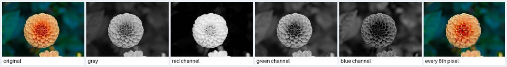
Fig S3 — The flower photo, its gray version, its three colour channels and every 8th pixel (real output of the program above)
Good to know
- Shape is (height, width, channels). OpenCV loads files as BGR, most other libraries as RGB: mixing them up turns blue skies orange.
- Gray = 0.299 R + 0.587 G + 0.114 B: green counts most because our eyes are most sensitive to it.
- uint8 values wrap around (250 + 10 = 4!): convert to float before arithmetic, then clip back to 0-255.
6 Colour Spaces: RGB, HSV, LAB
Picture: Describing a dress: 'R=200, G=40, B=60' is hard to reason about; 'a deep red, quite bright' (hue, saturation, value) is how people talk. HSV separates the colour itself from how light or dark it is.
Find yellow and red parts with HSV thresholds (run for real)
# Colour spaces: find the flower's yellow centre with HSV (hue = colour, saturation, value = brightness)
import cv2, numpy as np
from sklearn.datasets import load_sample_image
from cvshared import montage
rgb = load_sample_image("flower.jpg")
hsv = cv2.cvtColor(rgb, cv2.COLOR_RGB2HSV) # OpenCV hue range is 0..179
print("pixel RGB", rgb[213, 320].tolist(), "-> HSV", hsv[213, 320].tolist())
yellow = cv2.inRange(hsv, (15, 80, 80), (35, 255, 255)) # hue 15-35 = yellow/orange
red1, red2 = cv2.inRange(hsv, (0, 80, 60), (8, 255, 255)), cv2.inRange(hsv, (170, 80, 60), (179, 255, 255))
red = red1 | red2 # red wraps around the hue circle
print(f"yellow pixels: {np.count_nonzero(yellow)} ({100 * np.count_nonzero(yellow) / yellow.size:.1f}% of image)")
print(f"red pixels : {np.count_nonzero(red)} ({100 * np.count_nonzero(red) / red.size:.1f}% of image)")
lab = cv2.cvtColor(rgb, cv2.COLOR_RGB2LAB)
print("same pixel in LAB (lightness, green-red, blue-yellow):", lab[213, 320].tolist())
montage("colour.png", [rgb, hsv[..., 0], yellow, red, rgb * (yellow[..., None] > 0)],
["original", "hue channel", "yellow mask", "red mask", "only yellow kept"])
# ----- Output (real run) -----
# pixel RGB [143, 1, 0] -> HSV [0, 255, 143]
# yellow pixels: 26973 (9.9% of image)
# red pixels : 8485 (3.1% of image)
# same pixel in LAB (lightness, green-red, blue-yellow): [74, 180, 171]
# [saved picture colour.png: 1306x208]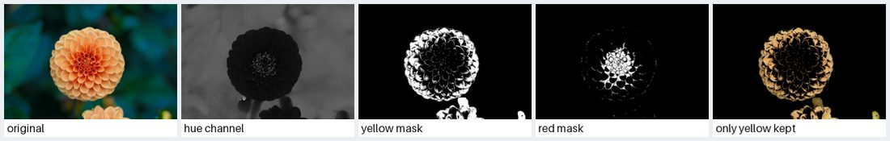
Fig S4 — Hue channel and colour masks of the flower photo (real output of the program above)
| Space | Channels | Good for |
|---|---|---|
| RGB / BGR | red, green, blue | storage, display, neural network input |
| HSV / HSL | hue, saturation, value | picking colours, simple colour segmentation |
| LAB | lightness, green-red, blue-yellow | colour differences that match human perception |
| YCrCb / YUV | brightness + 2 colour parts | video compression, skin detection |
| Gray | one brightness channel | edges, shapes, faster processing |
Good to know
- Red sits at both ends of the hue circle (0 and 179 in OpenCV), so red needs two ranges.
- Colour thresholds break when lighting changes; learned models are more robust.
7 The Small Helper Used by the Programs
Picture: A photo-album page: the programs paste their before/after pictures side by side with a label, and save them so you can see the real results.
shared/cvshared.py: save a labelled montage (used by many programs below) (template, not run)
"""Helpers shared by the programs on the Computer Vision page: save a labelled montage of images as a small PNG."""
import os
import numpy as np
from PIL import Image, ImageDraw, ImageFont
OUT = os.environ.get("CV_OUT", ".")
def to_uint8(img):
a = np.asarray(img)
if a.dtype == bool:
a = a.astype(np.uint8) * 255
elif a.dtype != np.uint8:
a = a.astype(np.float64)
lo, hi = a.min(), a.max()
a = ((a - lo) / (hi - lo + 1e-12) * 255).astype(np.uint8)
if a.ndim == 2:
a = np.stack([a] * 3, -1)
return a
def montage(name, images, labels, height=170):
"""Put images side by side (same height) with a label under each; save as OUT/name."""
tiles = []
for img, lab in zip(images, labels):
im = Image.fromarray(to_uint8(img))
w = max(1, int(im.width * height / im.height))
im = im.resize((w, height), Image.NEAREST if im.height < 64 else Image.BILINEAR)
tile = Image.new("RGB", (w, height + 26), "white")
tile.paste(im, (0, 0))
ImageDraw.Draw(tile).text((4, height + 3), lab, fill=(20, 20, 20), font=ImageFont.load_default(size=16))
tiles.append(tile)
W = sum(t.width for t in tiles) + 6 * (len(tiles) + 1)
canvas = Image.new("RGB", (W, height + 38), (235, 238, 243))
x = 6
for t in tiles:
canvas.paste(t, (x, 6)); x += t.width + 6
path = os.path.join(OUT, name)
canvas.save(path, optimize=True)
print(f"[saved picture {name}: {canvas.width}x{canvas.height}]")Part B — Image Processing: Changing and Cleaning Pictures
8 Histograms and Contrast
Picture: Sorting all the tiles of the mosaic into 256 buckets by brightness and counting them. A dull photo has all its tiles in a few middle buckets; improving contrast spreads them out.
Stretch, global equalization, CLAHE (run for real)
# Histograms and contrast: plain stretch vs histogram equalization vs CLAHE
import cv2, numpy as np
from skimage import data
from cvshared import montage
img = data.moon() # a dull, low-contrast photo
def spread(a): return int(np.percentile(a, 99) - np.percentile(a, 1))
eq = cv2.equalizeHist(img)
clahe = cv2.createCLAHE(clipLimit=2.0, tileGridSize=(8, 8)).apply(img)
lo, hi = np.percentile(img, (1, 99)); stretch = np.clip((img - lo) * 255.0 / (hi - lo), 0, 255).astype(np.uint8)
for name, a in [("original", img), ("stretch", stretch), ("equalized", eq), ("CLAHE", clahe)]:
h = np.bincount(a.ravel(), minlength=256)
print(f"{name:10} 1-99% brightness range: {spread(a):3d} | darkest bin {int(np.argmax(h > 0)):3d} | most common value {int(np.argmax(h)):3d}")
montage("histogram.png", [img, stretch, eq, clahe], ["original", "contrast stretch", "equalized", "CLAHE (local)"])
# ----- Output (real run) -----
# original 1-99% brightness range: 83 | darkest bin 0 | most common value 115
# stretch 1-99% brightness range: 255 | darkest bin 0 | most common value 175
# equalized 1-99% brightness range: 251 | darkest bin 0 | most common value 174
# CLAHE 1-99% brightness range: 123 | darkest bin 1 | most common value 119
# [saved picture histogram.png: 710x208]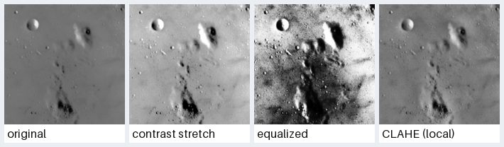
Fig S5 — Moon photo: original, contrast stretch, global histogram equalization, CLAHE (real output of the program above)
Good to know
- The original used only 83 of 256 brightness levels (1st-99th percentile); stretching and equalization use almost all of them.
- CLAHE equalizes small tiles separately with a limit, which avoids blowing up noise; widely used for medical and low-light images.
- Histograms are also simple image 'fingerprints' for comparing photos.
9 Thresholding and Counting Objects
Picture: Turning a photo into a black-and-white stencil: everything brighter than a chosen level becomes white, the rest black. Then you count the white islands.
Otsu threshold + morphology + connected components on the coins photo (run for real)
# Thresholding (Otsu) and counting objects with connected components: how many coins?
import cv2, numpy as np
from skimage import data
from cvshared import montage
img = data.coins()
blur = cv2.GaussianBlur(img, (5, 5), 0)
t, binary = cv2.threshold(blur, 0, 255, cv2.THRESH_BINARY + cv2.THRESH_OTSU)
print("Otsu picked threshold:", t)
clean = cv2.morphologyEx(binary, cv2.MORPH_OPEN, np.ones((5, 5), np.uint8))
n, labels, stats, _ = cv2.connectedComponentsWithStats(clean)
areas = stats[1:, cv2.CC_STAT_AREA]
big = areas[areas > 300]
print(f"components found: {n - 1}, with area > 300 px: {len(big)} (the photo shows 24 coins)")
adapt = cv2.adaptiveThreshold(blur, 255, cv2.ADAPTIVE_THRESH_GAUSSIAN_C, cv2.THRESH_BINARY, 51, -5)
n2 = cv2.connectedComponentsWithStats(cv2.morphologyEx(adapt, cv2.MORPH_OPEN, np.ones((5, 5), np.uint8)))[2][1:, 4]
print(f"adaptive threshold: {int((n2 > 300).sum())} components with area > 300 px")
montage("coins.png", [img, binary, clean, labels.astype(float), adapt], ["original", "Otsu threshold", "after opening", "labelled parts", "adaptive threshold"])
# ----- Output (real run) -----
# Otsu picked threshold: 104.0
# components found: 24, with area > 300 px: 24 (the photo shows 24 coins)
# adaptive threshold: 26 components with area > 300 px
# [saved picture coins.png: 1111x208]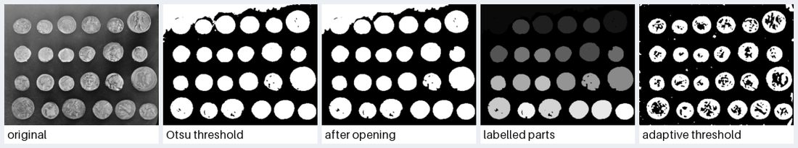
Fig S6 — Coins: original, Otsu threshold, cleaned, labelled components, adaptive threshold (real output of the program above)
Good to know
- Otsu's method picks the threshold (here 104) that best separates two brightness groups, automatically.
- Result: 24 components of area > 300 px, matching the 24 coins in the photo. Adaptive thresholding found 26: a different method gives a different answer, so always check against known counts.
- This 'threshold → clean → connected components' recipe still powers many industrial inspection systems.
10 Convolution: The Most Important Operation in Vision
Picture: Sliding a small stencil (kernel) over the picture and, at each spot, mixing the pixels under it with the stencil's weights. A stencil of equal weights blurs; a stencil with +/− weights finds changes (edges).
Convolution from scratch equals OpenCV (max difference 0) (run for real)
# Convolution from scratch (NumPy) gives the same answer as OpenCV; famous 3x3 kernels
import cv2, numpy as np
from skimage import data
from cvshared import montage
img = data.camera().astype(np.float32)
def conv2d(a, k): # 'same' size, zero padding, kernel flipped = true convolution
k = k[::-1, ::-1]; ph, pw = k.shape[0] // 2, k.shape[1] // 2
p = np.pad(a, ((ph, ph), (pw, pw)))
out = np.zeros_like(a)
for i in range(k.shape[0]):
for j in range(k.shape[1]):
out += k[i, j] * p[i:i + a.shape[0], j:j + a.shape[1]]
return out
K = {"box blur": np.ones((3, 3)) / 9, "sharpen": np.array([[0, -1, 0], [-1, 5, -1], [0, -1, 0]], float),
"edge (Laplacian)": np.array([[0, 1, 0], [1, -4, 1], [0, 1, 0]], float), "emboss": np.array([[-2, -1, 0], [-1, 1, 1], [0, 1, 2]], float)}
outs = []
for name, k in K.items():
mine = conv2d(img, k)
cvs = cv2.filter2D(img, -1, k[::-1, ::-1].astype(np.float32), borderType=cv2.BORDER_CONSTANT) # filter2D = correlation
print(f"{name:17} max difference NumPy vs OpenCV: {np.abs(mine - cvs).max():.4f}")
outs.append(np.clip(mine, 0, 255) if name != "edge (Laplacian)" else np.abs(mine))
montage("kernels.png", [img] + outs, ["original"] + list(K))
# ----- Output (real run) -----
# box blur max difference NumPy vs OpenCV: 0.0000
# sharpen max difference NumPy vs OpenCV: 0.0000
# edge (Laplacian) max difference NumPy vs OpenCV: 0.0000
# emboss max difference NumPy vs OpenCV: 0.0000
# [saved picture kernels.png: 886x208]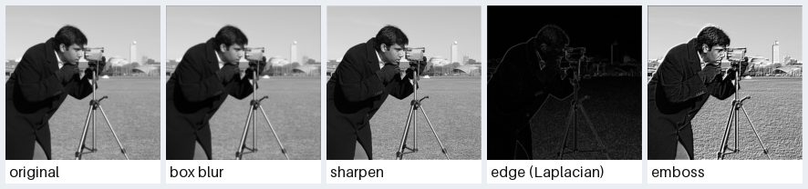
Fig S7 — The camera photo filtered with four 3×3 kernels (real output of the program above)
| Kernel | Weights | Effect |
|---|---|---|
| Box blur | all 1/9 | averages neighbours: smoother, less noise, less detail |
| Sharpen | centre 5, sides −1 | boosts differences from neighbours |
| Laplacian | centre −4, sides +1 | responds where brightness changes: edges |
| Emboss | diagonal −/+ | 3-D 'carved' look |
Good to know
- OpenCV's
filter2Dactually computes correlation (kernel not flipped); true convolution flips it. For symmetric kernels there is no difference; our program flipped explicitly and matched to 0.0000. - CNNs are stacks of convolutions whose kernels are learned instead of hand-written (Part D).
11 Noise and Smoothing Filters (Measured)
Picture: Cleaning a dusty photo. For fine grainy dust, gently averaging neighbours works; for scattered black and white specks (salt and pepper), taking the middle value of the neighbours removes them without smearing.
Mean, Gaussian, median and bilateral filters, scored with PSNR (run for real)
# Noise and filters: mean vs Gaussian vs median vs bilateral, measured with PSNR (higher = closer to the clean image)
import cv2, numpy as np
from skimage import data
from cvshared import montage
rng = np.random.default_rng(0)
clean = data.camera()
def psnr(a, b): return 10 * np.log10(255 ** 2 / np.mean((a.astype(float) - b.astype(float)) ** 2))
gauss = np.clip(clean + rng.normal(0, 20, clean.shape), 0, 255).astype(np.uint8)
sp = clean.copy(); m = rng.random(clean.shape); sp[m < 0.03] = 0; sp[m > 0.97] = 255
print(f"{'filter':12} {'Gaussian noise':>15} {'salt & pepper':>15} (PSNR in dB)")
print(f"{'(noisy)':12} {psnr(clean, gauss):15.1f} {psnr(clean, sp):15.1f}")
best = {}
for name, f in [("mean 5x5", lambda a: cv2.blur(a, (5, 5))), ("Gaussian 5x5", lambda a: cv2.GaussianBlur(a, (5, 5), 0)),
("median 5x5", lambda a: cv2.medianBlur(a, 5)), ("bilateral", lambda a: cv2.bilateralFilter(a, 9, 50, 9))]:
g, s = f(gauss), f(sp); best[name] = s
print(f"{name:12} {psnr(clean, g):15.1f} {psnr(clean, s):15.1f}")
montage("denoise.png", [sp, best["mean 5x5"], best["median 5x5"]], ["salt & pepper noise", "mean filter", "median filter"])
# ----- Output (real run) -----
# filter Gaussian noise salt & pepper (PSNR in dB)
# (noisy) 22.4 17.0
# mean 5x5 26.2 24.8
# Gaussian 5x5 27.9 25.2
# median 5x5 26.8 27.8
# bilateral 28.9 17.7
# [saved picture denoise.png: 534x208]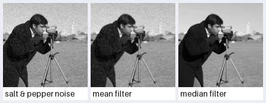
Fig S8 — Salt-and-pepper noise: the median filter removes specks, the mean filter only smears them (real output of the program above)
Fig S9 — PSNR (dB, higher = closer to the clean photo) after each filter on salt-and-pepper noise (real run)
Good to know
- Median won on salt-and-pepper (27.8 dB); bilateral won on Gaussian grain (28.9 dB) but was useless on specks (17.7 dB, almost no change). No filter is best for every noise.
- Bilateral filtering smooths flat areas but keeps edges sharp: common in beauty filters.
- Deep denoisers learn this from data (and phone cameras use them), but these classic filters are fast and need no training.
12 Edges: Sobel and Canny
Picture: Tracing the outline of a drawing with a pencil wherever the colour suddenly changes.
Sobel gradients and Canny with three threshold pairs (run for real)
# Edges: Sobel gradients and the Canny edge detector
import cv2, numpy as np
from skimage import data
from cvshared import montage
img = data.camera()
gx = cv2.Sobel(img, cv2.CV_64F, 1, 0, ksize=3); gy = cv2.Sobel(img, cv2.CV_64F, 0, 1, ksize=3)
mag = np.hypot(gx, gy)
print("gradient magnitude max:", round(float(mag.max()), 1), "| mean:", round(float(mag.mean()), 1))
for lo, hi in [(30, 90), (100, 200), (200, 300)]:
e = cv2.Canny(img, lo, hi)
print(f"Canny thresholds ({lo:3},{hi:3}): {np.count_nonzero(e):6d} edge pixels ({100 * np.count_nonzero(e) / e.size:.1f}%)")
montage("edges.png", [img, np.abs(gx), np.abs(gy), mag, cv2.Canny(img, 100, 200)], ["original", "Sobel x", "Sobel y", "magnitude", "Canny 100/200"])
# ----- Output (real run) -----
# gradient magnitude max: 930.1 | mean: 49.3
# Canny thresholds ( 30, 90): 40237 edge pixels (15.3%)
# Canny thresholds (100,200): 19686 edge pixels (7.5%)
# Canny thresholds (200,300): 7863 edge pixels (3.0%)
# [saved picture edges.png: 886x208]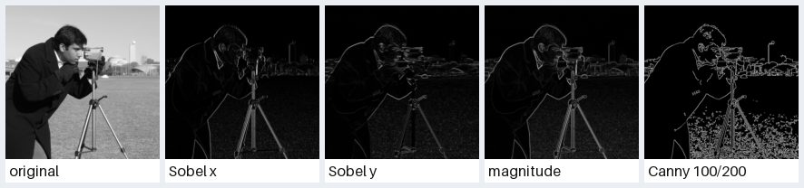
Fig S10 — Sobel x, Sobel y, gradient magnitude and Canny edges (real output of the program above)
Good to know
- Sobel measures how fast brightness changes left-right (x) and up-down (y); the magnitude combines both.
- Canny = smooth → gradient → keep only the thin peak of each edge → two thresholds with 'hysteresis' (weak edges are kept only if connected to strong ones).
- Thresholds matter a lot: 15.3% of pixels were edges at (30, 90) but only 3.0% at (200, 300). Tune them for your images.
13 Morphology: Erode, Dilate, Open, Close
Picture: Shaping play-dough letters: eroding shaves a thin layer off every edge, dilating adds one. 'Opening' (erode then dilate) removes tiny crumbs; 'closing' (dilate then erode) fills small holes.
Cleaning a noisy binary drawing (run for real)
# Morphology on a binary image: erosion, dilation, opening (removes specks), closing (fills holes)
import cv2, numpy as np
from cvshared import montage
rng = np.random.default_rng(1)
img = np.zeros((120, 200), np.uint8)
cv2.putText(img, "CV", (25, 95), cv2.FONT_HERSHEY_SIMPLEX, 3, 255, 12)
noisy = img.copy(); noisy[rng.random(img.shape) < 0.02] = 255 # white specks
holes = noisy.copy(); holes[(rng.random(img.shape) < 0.05) & (img > 0)] = 0 # black holes inside letters
k = np.ones((3, 3), np.uint8)
ops = {"erode": cv2.erode(holes, k), "dilate": cv2.dilate(holes, k),
"open": cv2.morphologyEx(holes, cv2.MORPH_OPEN, k), "close": cv2.morphologyEx(holes, cv2.MORPH_CLOSE, k)}
ops["open then close"] = cv2.morphologyEx(ops["open"], cv2.MORPH_CLOSE, k)
for name, o in ops.items():
err = np.count_nonzero(o != img)
print(f"{name:16} pixels different from the clean drawing: {err:5d}")
print(f"{'(noisy input)':16} pixels different from the clean drawing: {np.count_nonzero(holes != img):5d}")
montage("morphology.png", [img, holes, ops["erode"], ops["dilate"], ops["open then close"]], ["clean", "noisy", "erode", "dilate", "open+close"])
# ----- Output (real run) -----
# erode pixels different from the clean drawing: 2182
# dilate pixels different from the clean drawing: 4325
# open pixels different from the clean drawing: 647
# close pixels different from the clean drawing: 639
# open then close pixels different from the clean drawing: 495
# (noisy input) pixels different from the clean drawing: 581
# [saved picture morphology.png: 1451x208]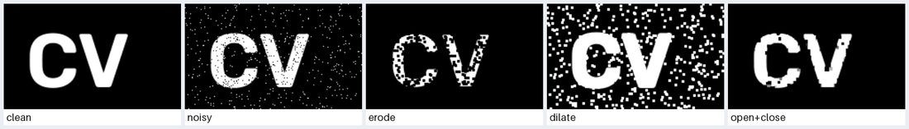
Fig S11 — Clean drawing, noisy version, erosion, dilation, opening then closing (real output of the program above)
Good to know
- Honest result: opening alone (647 wrong pixels) and closing alone (639) were each worse than the noisy input (581); only opening then closing (495) improved it. Each operation also damages the letter shapes a little.
- Choose the kernel size from the size of the noise you want to remove; bigger kernels remove more noise and more detail.
Part C — Geometry, Cameras and Features
14 Geometric Transforms and Homography
Picture: Photographing a page lying on a table: it looks like a trapezium. If you mark its 4 corners, you can 'iron it flat' back into a rectangle. That ironing is a perspective transform (homography).
Rotate/scale, tilt a page, straighten it again (run for real)
# Geometry: rotate/scale (affine) and straighten a tilted 'document' with a perspective transform (homography)
import cv2, numpy as np
from skimage import data
from cvshared import montage
page = cv2.cvtColor(data.page(), cv2.COLOR_GRAY2RGB) # a scanned page (191 x 384)
h, w = page.shape[:2]
canvas = np.full((400, 560, 3), 90, np.uint8)
src = np.float32([[0, 0], [w, 0], [w, h], [0, h]])
tilted_corners = np.float32([[90, 60], [470, 100], [440, 330], [60, 290]]) # where the page lies in the 'photo'
H = cv2.getPerspectiveTransform(src, tilted_corners)
photo = cv2.warpPerspective(page, H, (560, 400), dst=canvas, borderMode=cv2.BORDER_TRANSPARENT)
print("homography matrix H (3x3):\n", H.round(3))
H_back = cv2.getPerspectiveTransform(tilted_corners, src) # user clicked the 4 corners
flat = cv2.warpPerspective(photo, H_back, (w, h))
err = np.abs(flat.astype(int) - page.astype(int)).mean()
print(f"straightened page vs original: mean absolute difference {err:.1f} (0 = perfect; >0 from resampling)")
M = cv2.getRotationMatrix2D((w / 2, h / 2), 30, 0.7)
print("affine rotation+scale matrix (2x3):\n", M.round(3))
rot = cv2.warpAffine(page, M, (w, h))
montage("geometry.png", [page, rot, photo, flat], ["original", "rotate 30°, scale 0.7", "tilted 'photo'", "straightened"])
# ----- Output (real run) -----
# homography matrix H (3x3):
# [[ 0.99 -0.157 90. ]
# [ 0.104 1.204 60. ]
# [ 0. 0. 1. ]]
# straightened page vs original: mean absolute difference 5.2 (0 = perfect; >0 from resampling)
# affine rotation+scale matrix (2x3):
# [[ 0.606 0.35 42.181]
# [ -0.35 0.606 104.806]]
# [saved picture geometry.png: 1291x208]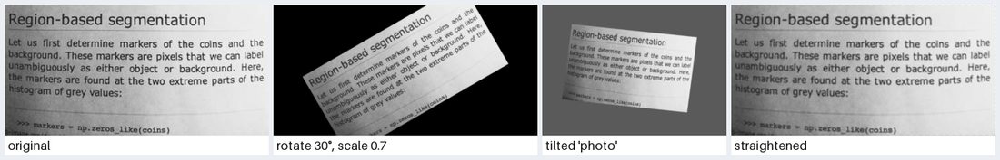
Fig S12 — Original page, rotated and scaled copy, tilted 'photo', straightened page (real output of the program above)
| Transform | Matrix | Keeps | Needs |
|---|---|---|---|
| Translation, rotation, scale | 2×3 (similarity) | angles, shape | 2 point pairs |
| Affine | 2×3 | parallel lines | 3 point pairs |
| Perspective (homography) | 3×3 | straight lines | 4 point pairs |
Good to know
- Document scanner apps do exactly this: find the 4 page corners (edges + contour finding), compute H, warp.
- The straightened page differed from the original by 5.2 gray levels on average: resampling pixels twice always loses a little sharpness.
15 Keypoints and Matching (ORB + RANSAC)
Picture: Recognising a friend in a crowd by a few special details (a mole, a scar, the shape of glasses) rather than by every pixel. Keypoints are those special details; descriptors are their short descriptions.
Corners, ORB keypoints, matching and a RANSAC homography (run for real)
# Keypoints and matching: ORB features + RANSAC homography find the same object after rotation and scaling
import cv2, numpy as np
from skimage import data
from cvshared import montage
a = cv2.cvtColor(data.astronaut(), cv2.COLOR_RGB2GRAY)
h, w = a.shape
M = cv2.getRotationMatrix2D((w / 2, h / 2), 25, 0.8)
b = cv2.warpAffine(a, M, (w, h))
corners = cv2.goodFeaturesToTrack(a, maxCorners=200, qualityLevel=0.01, minDistance=8)
print("Shi-Tomasi corners found:", len(corners))
orb = cv2.ORB_create(1000)
ka, da = orb.detectAndCompute(a, None); kb, db = orb.detectAndCompute(b, None)
matches = sorted(cv2.BFMatcher(cv2.NORM_HAMMING, crossCheck=True).match(da, db), key=lambda m: m.distance)
print("ORB keypoints:", len(ka), "and", len(kb), "| cross-checked matches:", len(matches))
pa = np.float32([ka[m.queryIdx].pt for m in matches]); pb = np.float32([kb[m.trainIdx].pt for m in matches])
H, inl = cv2.findHomography(pa, pb, cv2.RANSAC, 4.0)
print(f"RANSAC inliers: {int(inl.sum())} of {len(matches)} matches ({100 * inl.mean():.0f}%)")
true = np.vstack([M, [0, 0, 1]])
print("recovered transform (should be close to the true rotation+scale):\n", (H / H[2, 2]).round(3))
print("true transform:\n", true.round(3))
vis = cv2.drawMatches(a, ka, b, kb, [m for m, ok in zip(matches, inl.ravel()) if ok][:40], None, flags=2)
montage("matches.png", [vis], ["40 inlier matches: original (left) and rotated + scaled copy (right)"], height=260)
# ----- Output (real run) -----
# Shi-Tomasi corners found: 200
# ORB keypoints: 1000 and 1000 | cross-checked matches: 544
# RANSAC inliers: 515 of 544 matches (95%)
# recovered transform (should be close to the true rotation+scale):
# [[ 0.726 0.338 -15.912]
# [ -0.338 0.726 156.695]
# [ 0. 0. 1. ]]
# true transform:
# [[ 0.725 0.338 -16.164]
# [ -0.338 0.725 156.94 ]
# [ 0. 0. 1. ]]
# [saved picture matches.png: 532x298]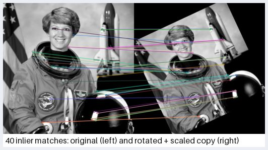
Fig S13 — ORB matches between the astronaut photo and a rotated, scaled copy (real output of the program above)
Good to know
- ORB found 1,000 keypoints in each image; 544 matched; RANSAC kept 515 (95%) as consistent and recovered the rotation+scale almost exactly (0.726 vs the true 0.725).
- RANSAC = try many random small sets of matches, keep the transform that most matches agree with; wrong matches (outliers) get voted out.
- Used for panoramas, AR, visual localisation, SLAM. Classic descriptors: SIFT (patent expired in 2020), SURF, ORB (free and fast); learned ones (SuperPoint-style) are common now.
16 Template Matching (and Where It Breaks)
Picture: Sliding a small cut-out photo over a big photo until it fits perfectly, like finding where a jigsaw piece goes.
Normalized cross-correlation on the coffee photo (run for real)
# Finding an object by template matching (normalized cross-correlation), and where it breaks
import cv2, numpy as np
from skimage import data
from cvshared import montage
scene = cv2.cvtColor(data.coffee(), cv2.COLOR_RGB2GRAY)
y0, x0 = 150, 260
tmpl = scene[y0:y0 + 60, x0:x0 + 80].copy() # the object we look for
res = cv2.matchTemplate(scene, tmpl, cv2.TM_CCOEFF_NORMED)
_, best, _, loc = cv2.minMaxLoc(res)
print(f"exact copy: best score {best:.3f} at (x={loc[0]}, y={loc[1]}) | true position (x={x0}, y={y0})")
for name, t in [("brighter +40", np.clip(tmpl.astype(int) + 40, 0, 255).astype(np.uint8)),
("rotated 20°", cv2.warpAffine(tmpl, cv2.getRotationMatrix2D((40, 30), 20, 1.0), (80, 60))),
("scaled 1.5x", cv2.resize(tmpl, None, fx=1.5, fy=1.5))]:
r = cv2.matchTemplate(scene, t, cv2.TM_CCOEFF_NORMED); _, s, _, l = cv2.minMaxLoc(r)
print(f"{name:13}: best score {s:.3f} at (x={l[0]}, y={l[1]}) -> {'found' if abs(l[0] - x0) < 10 and abs(l[1] - y0) < 10 else 'WRONG place'}")
vis = cv2.cvtColor(scene, cv2.COLOR_GRAY2RGB); cv2.rectangle(vis, loc, (loc[0] + 80, loc[1] + 60), (255, 0, 0), 3)
montage("template.png", [tmpl, vis, res], ["template", "best match", "score map"])
# ----- Output (real run) -----
# exact copy: best score 1.000 at (x=260, y=150) | true position (x=260, y=150)
# brighter +40 : best score 0.982 at (x=260, y=150) -> found
# rotated 20° : best score 0.697 at (x=290, y=145) -> WRONG place
# scaled 1.5x : best score 0.854 at (x=238, y=121) -> WRONG place
# [saved picture template.png: 764x208]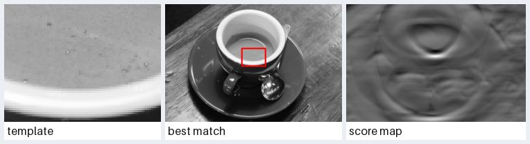
Fig S14 — Template, best match, and the score map (bright = good fit) (real output of the program above)
Good to know
- Brightness change: still found (score 0.982), because normalized correlation ignores overall brightness.
- Rotation by 20° or scaling by 1.5×: found the wrong place. Template matching only works when the object looks almost exactly the same; that is why keypoints and learned detectors exist.
17 Classic Machine Learning on Images: HOG + SVM
Picture: Describing a handwritten digit not by its exact pixels but by 'which way the strokes point in each small area'. Moving the digit slightly changes pixels a lot but stroke directions only a little.
Raw pixels vs HOG features with a linear SVM on 8×8 digits (run for real)
# Classic ML on images: raw pixels vs HOG features, with a linear SVM (sklearn digits, 8x8 images)
import numpy as np, time
from sklearn.datasets import load_digits
from sklearn.svm import LinearSVC
from sklearn.model_selection import train_test_split
from skimage.feature import hog
from skimage.transform import resize
X, y = load_digits(return_X_y=True)
imgs = X.reshape(-1, 8, 8) / 16.0
up = np.array([resize(i, (16, 16), order=1) for i in imgs])
H = np.array([hog(i, orientations=9, pixels_per_cell=(4, 4), cells_per_block=(2, 2)) for i in up])
print("images:", len(X), "| raw features:", X.shape[1], "| HOG features:", H.shape[1])
for name, F in [("raw pixels", X / 16.0), ("HOG", H)]:
Xtr, Xte, ytr, yte = train_test_split(F, y, test_size=0.3, random_state=0, stratify=y)
t = time.perf_counter(); clf = LinearSVC(C=1.0, max_iter=20000).fit(Xtr, ytr)
print(f"{name:10} test accuracy {clf.score(Xte, yte):.3f} (train {time.perf_counter() - t:.2f} s)")
rng = np.random.default_rng(0)
shift = np.roll(imgs, 1, axis=2) # move every digit 1 pixel right
Hs = np.array([hog(resize(i, (16, 16), order=1), orientations=9, pixels_per_cell=(4, 4), cells_per_block=(2, 2)) for i in shift])
_, Xte_r, _, yte_r = train_test_split(shift.reshape(-1, 64), y, test_size=0.3, random_state=0, stratify=y)
_, Xte_h, _, _ = train_test_split(Hs, y, test_size=0.3, random_state=0, stratify=y)
raw_clf = LinearSVC(max_iter=20000).fit(*train_test_split(X / 16.0, y, test_size=0.3, random_state=0, stratify=y)[::2])
hog_clf = LinearSVC(max_iter=20000).fit(*train_test_split(H, y, test_size=0.3, random_state=0, stratify=y)[::2])
print(f"digits shifted 1 px right: raw {raw_clf.score(Xte_r, yte_r):.3f} | HOG {hog_clf.score(Xte_h, yte_r):.3f}")
# ----- Output (real run) -----
# images: 1797 | raw features: 64 | HOG features: 324
# raw pixels test accuracy 0.970 (train 0.02 s)
# HOG test accuracy 0.974 (train 0.08 s)
# digits shifted 1 px right: raw 0.433 | HOG 0.780Good to know
- On normal test digits both were similar (0.970 vs 0.974). On digits shifted by just 1 pixel, raw pixels collapsed to 0.433 while HOG kept 0.780: hand-designed features can buy robustness.
- HOG + SVM powered pedestrian detection before deep learning (Dalal and Triggs, 2005).
- CNNs learn such features automatically, and with augmentation become robust to shifts too (see below).
Part D — Deep Learning for Vision
18 CNN Building Blocks: Convolution, Stride, Padding, Pooling
Picture: A team of tiny inspectors, each carrying one small stencil. Each inspector slides their stencil over the picture and writes down how strongly it matches everywhere. The next team inspects those notes, so later teams see bigger and more abstract patterns.
A Conv2d with a hand-set Sobel kernel equals NumPy; output sizes (run for real)
# A conv layer is just many small kernels: PyTorch Conv2d with a hand-set kernel = our NumPy convolution
import numpy as np, torch, torch.nn as nn
from skimage import data
img = data.camera().astype(np.float32) / 255
k = np.array([[-1, 0, 1], [-2, 0, 2], [-1, 0, 1]], np.float32) # Sobel-x
conv = nn.Conv2d(1, 1, 3, padding=1, bias=False)
with torch.no_grad(): conv.weight[:] = torch.tensor(k)[None, None]
out_t = conv(torch.tensor(img)[None, None])[0, 0].detach().numpy()
p = np.pad(img, 1); out_np = sum(k[i, j] * p[i:i + 512, j:j + 512] for i in range(3) for j in range(3)) # cross-correlation
print("max difference PyTorch vs NumPy:", float(np.abs(out_t - out_np).max()))
layer = nn.Conv2d(3, 64, 3)
print("a Conv2d(3->64, 3x3) layer has", sum(p.numel() for p in layer.parameters()), "parameters (64 kernels of 3x3x3 + 64 biases)")
x = torch.zeros(1, 3, 224, 224)
for name, l in [("conv 3x3, stride 1, pad 1", nn.Conv2d(3, 8, 3, 1, 1)), ("conv 3x3, stride 2, pad 1", nn.Conv2d(3, 8, 3, 2, 1)), ("max-pool 2x2", nn.MaxPool2d(2))]:
print(f"{name:26} 224x224 -> {tuple(l(x).shape[2:])}")
# ----- Output (real run) -----
# max difference PyTorch vs NumPy: 0.0
# a Conv2d(3->64, 3x3) layer has 1792 parameters (64 kernels of 3x3x3 + 64 biases)
# conv 3x3, stride 1, pad 1 224x224 -> (224, 224)
# conv 3x3, stride 2, pad 1 224x224 -> (112, 112)
# max-pool 2x2 224x224 -> (112, 112)| Piece | What it does | Output size rule |
|---|---|---|
| Convolution (k×k kernels) | detects local patterns; same kernel everywhere (weight sharing) | out = (in + 2·pad − k) / stride + 1 |
| Stride 2 | jumps 2 pixels: halves width and height | 224 → 112 |
| Padding | adds a border so size is kept | pad 1 with 3×3 keeps 224 → 224 |
| Pooling (max/avg) | keeps the strongest/average value in each window | 2×2 halves the size |
| ReLU | keeps positive values, zeros negatives | same size |
| Batch norm | keeps activations in a stable range | same size |
Good to know
- A Conv2d(3→64, 3×3) has only 1,792 weights, yet works on any image size: weight sharing is why CNNs need far fewer weights than fully connected nets on images.
19 Your First CNN: Logistic Regression vs MLP vs CNN
Picture: Three students learning to read handwritten digits: one compares raw dot patterns (logistic regression), one finds combinations of dots (MLP), one looks for strokes and shapes in small windows (CNN).
Same split of the 1,797 sklearn digits, CPU (run for real)
# Logistic regression vs MLP vs a small CNN on the 8x8 digits (1,797 images), same split, CPU
import numpy as np, torch, torch.nn as nn, time
from sklearn.datasets import load_digits
from sklearn.model_selection import train_test_split
from sklearn.linear_model import LogisticRegression
from sklearn.metrics import confusion_matrix
torch.manual_seed(0)
X, y = load_digits(return_X_y=True); X = X / 16.0
Xtr, Xte, ytr, yte = train_test_split(X, y, test_size=0.3, random_state=0, stratify=y)
lr = LogisticRegression(max_iter=2000).fit(Xtr, ytr); print(f"logistic regression : {lr.score(Xte, yte):.3f}")
def train(model, epochs=40, img=False):
xt = torch.tensor(Xtr, dtype=torch.float32); xv = torch.tensor(Xte, dtype=torch.float32)
if img: xt, xv = xt.view(-1, 1, 8, 8), xv.view(-1, 1, 8, 8)
yt = torch.tensor(ytr); opt = torch.optim.Adam(model.parameters(), 1e-2 if not img else 3e-3); t = time.perf_counter()
for e in range(epochs):
perm = torch.randperm(len(xt))
for i in range(0, len(xt), 64):
b = perm[i:i + 64]; opt.zero_grad(); nn.functional.cross_entropy(model(xt[b]), yt[b]).backward(); opt.step()
model.eval(); pred = model(xv).argmax(1).numpy()
return (pred == yte).mean(), time.perf_counter() - t, pred
mlp = nn.Sequential(nn.Linear(64, 128), nn.ReLU(), nn.Linear(128, 10))
a, t, _ = train(mlp); print(f"MLP (1 hidden layer) : {a:.3f} params {sum(p.numel() for p in mlp.parameters())} time {t:.1f}s")
cnn = nn.Sequential(nn.Conv2d(1, 16, 3, padding=1), nn.ReLU(), nn.Conv2d(16, 32, 3, padding=1), nn.ReLU(), nn.MaxPool2d(2),
nn.Flatten(), nn.Linear(32 * 4 * 4, 64), nn.ReLU(), nn.Linear(64, 10))
a, t, pred = train(cnn, img=True); print(f"small CNN : {a:.3f} params {sum(p.numel() for p in cnn.parameters())} time {t:.1f}s")
cm = confusion_matrix(yte, pred); off = [(i, j, int(cm[i, j])) for i in range(10) for j in range(10) if i != j and cm[i, j]]
print("CNN mistakes (true -> predicted, count):", sorted(off, key=lambda x: -x[2])[:6])
torch.save(cnn.state_dict(), "cnn_digits.pt")
# ----- Output (real run) -----
# logistic regression : 0.970
# MLP (1 hidden layer) : 0.976 params 9610 time 0.6s
# small CNN : 0.978 params 38282 time 2.3s
# CNN mistakes (true -> predicted, count): [(8, 1, 2), (2, 1, 1), (2, 3, 1), (3, 5, 1), (3, 7, 1), (3, 9, 1)]Good to know
- Logistic regression 0.970, MLP 0.976, CNN 0.978: on tiny 8×8 centred digits the gap is small. CNNs shine on bigger, messier images (real photos, shifted objects).
- The CNN confused 8 → 1 twice: look at the mistakes, not only the score.
- Training took a few seconds on a laptop CPU; real image models train for hours or days on GPUs.
20 What Does a CNN Learn? Kernels and Feature Maps
Picture: Opening the inspectors' notebooks: each first-layer inspector learned its own stencil, some look for left-edges, some for curves, some for dark spots.
First-layer kernels and feature maps of a 1-conv-layer net (run for real)
# What did the CNN learn? Look at first-layer kernels and the feature maps for one digit
import numpy as np, torch, torch.nn as nn
from sklearn.datasets import load_digits
from sklearn.model_selection import train_test_split
from cvshared import montage
torch.manual_seed(0)
X, y = load_digits(return_X_y=True); X = torch.tensor(X / 16.0, dtype=torch.float32).view(-1, 1, 8, 8); y = torch.tensor(y)
Xtr, Xte, ytr, yte = train_test_split(X, y, test_size=0.3, random_state=0, stratify=y)
conv1 = nn.Conv2d(1, 8, 3, padding=1)
m = nn.Sequential(conv1, nn.ReLU(), nn.MaxPool2d(2), nn.Flatten(), nn.Linear(8 * 16, 10))
opt = torch.optim.Adam(m.parameters(), 1e-2)
for e in range(200):
opt.zero_grad(); nn.functional.cross_entropy(m(Xtr), ytr).backward(); opt.step()
print("test accuracy of this 1-conv-layer net:", round((m(Xte).argmax(1) == yte).float().mean().item(), 3))
W = conv1.weight.detach()[:, 0].numpy()
digit = Xte[0:1]; maps = torch.relu(conv1(digit))[0].detach().numpy()
print("kernel 0 (3x3):\n", W[0].round(2))
print("digit label:", int(yte[0]), "| strongest feature map:", int(maps.reshape(8, -1).sum(1).argmax()))
montage("filters.png", [digit[0, 0].numpy()] + [W[i] for i in range(8)], ["digit"] + [f"kernel {i}" for i in range(8)], height=90)
montage("featuremaps.png", [digit[0, 0].numpy()] + [maps[i] for i in range(8)], ["digit"] + [f"map {i}" for i in range(8)], height=90)
# ----- Output (real run) -----
# test accuracy of this 1-conv-layer net: 0.978
# kernel 0 (3x3):
# [[-0.71 0.55 -0.72]
# [-0.87 -0.31 0.85]
# [-0.57 0.77 0.33]]
# digit label: 1 | strongest feature map: 2
# [saved picture filters.png: 870x128]
# [saved picture featuremaps.png: 870x128]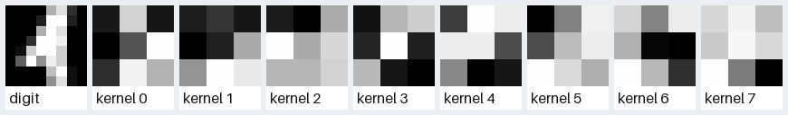
Fig S15 — The 8 learned 3×3 kernels (bright = positive weight) (real output of the program above)
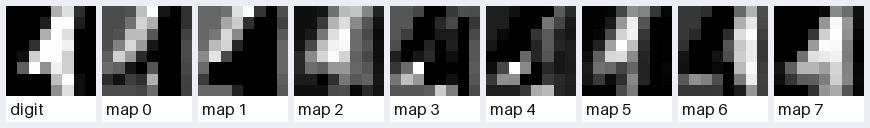
Fig S16 — The same digit as seen through each of the 8 kernels (real output of the program above)
Good to know
- Even this tiny net (0.978 accuracy) learned edge-like kernels without being told about edges.
- Deeper layers combine edges into parts (loops, corners), then objects. Tools like Grad-CAM show which pixels drove a decision: useful for debugging and trust.
21 Data Augmentation: More Data for Free
Picture: Showing a child the same cat photo slightly rotated, zoomed and moved, so they learn 'cat' and not 'cat exactly in the middle of the frame'.
150 training digits, with and without random affine augmentation, 3 seeds each (run for real)
# Data augmentation when data is scarce: train a CNN on only 150 digits, with and without random shifts/rotations
import numpy as np, torch, torch.nn as nn
from sklearn.datasets import load_digits
from sklearn.model_selection import train_test_split
import torchvision.transforms.v2 as T
X, y = load_digits(return_X_y=True); X = torch.tensor(X / 16.0, dtype=torch.float32).view(-1, 1, 8, 8); y = torch.tensor(y)
Xtr, Xte, ytr, yte = train_test_split(X, y, train_size=150, random_state=0, stratify=y)
aug = T.RandomAffine(degrees=12, translate=(0.12, 0.12), scale=(0.9, 1.1))
def run(use_aug, seed):
torch.manual_seed(seed)
m = nn.Sequential(nn.Conv2d(1, 16, 3, padding=1), nn.ReLU(), nn.MaxPool2d(2), nn.Conv2d(16, 32, 3, padding=1), nn.ReLU(),
nn.Flatten(), nn.Linear(32 * 16, 10))
opt = torch.optim.Adam(m.parameters(), 3e-3)
for e in range(150):
xb = torch.stack([aug(x) for x in Xtr]) if use_aug else Xtr
opt.zero_grad(); nn.functional.cross_entropy(m(xb), ytr).backward(); opt.step()
with torch.no_grad():
shifted = torch.roll(Xte, 1, dims=3)
return (m(Xte).argmax(1) == yte).float().mean().item(), (m(shifted).argmax(1) == yte).float().mean().item()
for use in [False, True]:
r = np.array([run(use, s) for s in range(3)])
print(f"augmentation {'ON ' if use else 'OFF'}: test acc {r[:, 0].mean():.3f} (seeds {r[:, 0].round(3).tolist()}) | on test digits shifted 1 px: {r[:, 1].mean():.3f}")
# ----- Output (real run) -----
# augmentation OFF: test acc 0.903 (seeds [0.898, 0.909, 0.903]) | on test digits shifted 1 px: 0.511
# augmentation ON : test acc 0.946 (seeds [0.947, 0.945, 0.946]) | on test digits shifted 1 px: 0.898Fig S17 — Accuracy with only 150 training images (real runs, mean of 3 seeds)
Good to know
- With little data, augmentation helped: 0.903 → 0.946 on normal test digits, and 0.511 → 0.898 on digits shifted by one pixel.
- Pick augmentations that keep the label true: flipping a '6' upside down makes a '9'; flipping a cat photo is fine.
- Note from the TensorFlow & PyTorch guide: there, an augmentation experiment hurt accuracy. Augmentation is a tool to test, not a guaranteed win.
22 Transfer Learning with Pre-trained Networks
Picture: A trained chef learning a new cuisine: knife skills and taste are already there, only the new recipes must be learned.
Fine-tuning a pre-trained ResNet-18 with torchvision (template, not run)
# Transfer learning with a pretrained ResNet in torchvision (downloads ImageNet weights: not run here)
import torch, torch.nn as nn
from torchvision import models, datasets, transforms
weights = models.ResNet18_Weights.DEFAULT
model = models.resnet18(weights=weights)
for p in model.parameters():
p.requires_grad = False # freeze the backbone ...
model.fc = nn.Linear(model.fc.in_features, 5) # ... and train a new head for 5 classes
tfm = weights.transforms() # the exact resize/crop/normalise the weights expect
train = datasets.ImageFolder("data/train", transform=tfm) # data/train/<class_name>/*.jpg
loader = torch.utils.data.DataLoader(train, batch_size=32, shuffle=True)
opt = torch.optim.AdamW(model.fc.parameters(), lr=1e-3)
for epoch in range(5):
for x, y in loader:
opt.zero_grad(); nn.functional.cross_entropy(model(x), y).backward(); opt.step()
# Then unfreeze the last block with a 10x smaller learning rate ('fine-tuning').| Data you have | What to do |
|---|---|
| Very little (tens to hundreds per class) | freeze the backbone, train only a new head |
| Medium | fine-tune the last blocks with a small learning rate |
| A lot (and different from ImageNet, e.g. X-rays) | fine-tune everything, or pre-train on your own domain |
Good to know
- Always use the exact pre-processing the weights expect (size, normalisation): torchvision's
weights.transforms()gives it. - Not run here because it downloads ImageNet weights. The TensorFlow & PyTorch guide has an honest negative result: frozen-feature transfer to tiny 8×8 digits did not win, because those images look nothing like ImageNet photos.
23 Famous Architectures in One Table
Picture: A family tree of vision models: each generation fixed a problem of the one before.
| Model (year) | Key idea | Why it mattered |
|---|---|---|
| LeNet-5 (1998) | small CNN for digits | showed CNNs work for reading cheques |
| AlexNet (2012) | deep CNN + ReLU + GPUs + dropout | won ImageNet by a big margin; started the deep-learning wave |
| VGG (2014) | only 3×3 convolutions, deeper | simple, popular feature extractor |
| GoogLeNet / Inception (2014) | parallel kernel sizes | efficient |
| ResNet (2015) | skip (residual) connections | made 100+ layer networks trainable |
| MobileNet / EfficientNet (2017-2019) | cheap depthwise convolutions, scaling rules | phones and edge devices |
| U-Net (2015) | encoder-decoder with skips | segmentation, later diffusion models |
| ViT (2020) | image patches as tokens + Transformer | Transformers for vision |
| ConvNeXt (2022) | modernised CNN | showed CNNs still compete with ViTs |
24 Vision Transformers: Patches Are Words
Picture: Cutting a photo into stamp-sized squares and reading them like words in a sentence; each stamp can 'pay attention' to every other stamp.
Token counts, and a tiny ViT vs a small CNN on 8×8 digits (run for real)
# A tiny Vision Transformer vs a small CNN on the same 8x8 digits: patches as words
import numpy as np, torch, torch.nn as nn
from sklearn.datasets import load_digits
from sklearn.model_selection import train_test_split
X, y = load_digits(return_X_y=True); X = torch.tensor(X / 16.0, dtype=torch.float32).view(-1, 1, 8, 8); y = torch.tensor(y)
Xtr, Xte, ytr, yte = train_test_split(X, y, test_size=0.3, random_state=0, stratify=y)
for size, patch in [(224, 16), (224, 14), (384, 16)]:
n = (size // patch) ** 2; print(f"a {size}x{size} image with {patch}x{patch} patches -> {n} tokens; attention compares {n * n:,} pairs")
class TinyViT(nn.Module):
def __init__(self, d=48, patch=2):
super().__init__(); n = (8 // patch) ** 2
self.embed = nn.Conv2d(1, d, patch, stride=patch) # cut into patches + project
self.cls = nn.Parameter(torch.zeros(1, 1, d)); self.pos = nn.Parameter(torch.randn(1, n + 1, d) * 0.02)
self.enc = nn.TransformerEncoder(nn.TransformerEncoderLayer(d, 4, 4 * d, batch_first=True, norm_first=True), 2)
self.head = nn.Linear(d, 10)
def forward(self, x):
t = self.embed(x).flatten(2).transpose(1, 2)
t = torch.cat([self.cls.expand(len(x), -1, -1), t], 1) + self.pos
return self.head(self.enc(t)[:, 0])
def fit(m, epochs=60):
torch.manual_seed(0); opt = torch.optim.AdamW(m.parameters(), 2e-3)
for e in range(epochs):
perm = torch.randperm(len(Xtr))
for i in range(0, len(Xtr), 64):
b = perm[i:i + 64]; opt.zero_grad(); nn.functional.cross_entropy(m(Xtr[b]), ytr[b]).backward(); opt.step()
m.eval()
with torch.no_grad(): return (m(Xte).argmax(1) == yte).float().mean().item()
torch.manual_seed(0); vit = TinyViT()
torch.manual_seed(0); cnn = nn.Sequential(nn.Conv2d(1, 16, 3, padding=1), nn.ReLU(), nn.Conv2d(16, 32, 3, padding=1), nn.ReLU(), nn.MaxPool2d(2), nn.Flatten(), nn.Linear(512, 10))
print(f"tiny ViT : accuracy {fit(vit):.3f}, params {sum(p.numel() for p in vit.parameters())}")
print(f"small CNN: accuracy {fit(cnn):.3f}, params {sum(p.numel() for p in cnn.parameters())}")
# ----- Output (real run) -----
# a 224x224 image with 16x16 patches -> 196 tokens; attention compares 38,416 pairs
# a 224x224 image with 14x14 patches -> 256 tokens; attention compares 65,536 pairs
# a 384x384 image with 16x16 patches -> 576 tokens; attention compares 331,776 pairs
# tiny ViT : accuracy 0.954, params 58138
# small CNN: accuracy 0.981, params 9930Good to know
- Honest result: on 1,257 tiny training images the tiny ViT scored 0.954 vs 0.981 for a CNN with 6× fewer weights. CNNs have built-in assumptions about images (nearby pixels matter, patterns repeat); ViTs must learn them from data, so they need much more data or pre-training.
- Attention cost grows with the square of the number of patches: 196 tokens for 224×224 with 16×16 patches, but 576 tokens (331,776 pairs) at 384×384.
- Today most large vision and vision-language models use Transformer backbones, pre-trained on huge image collections.
25 Self-Supervised, CLIP and Foundation Models
Picture: Learning by matching photos with their captions on millions of web pages. Afterwards you can show the model a new photo and a few sentences, and it picks the sentence that fits, even for classes it was never trained on.
CLIP zero-shot classification and SAM promptable segmentation (template, not run)
# Foundation models: CLIP zero-shot classification and SAM-style promptable segmentation (downloads weights: not run here)
import torch
from PIL import Image
from transformers import CLIPModel, CLIPProcessor
model = CLIPModel.from_pretrained("openai/clip-vit-base-patch32")
proc = CLIPProcessor.from_pretrained("openai/clip-vit-base-patch32")
image = Image.open("photo.jpg")
labels = ["a photo of a cat", "a photo of a dog", "a photo of a car"]
inputs = proc(text=labels, images=image, return_tensors="pt", padding=True)
probs = model(**inputs).logits_per_image.softmax(-1)[0]
print(dict(zip(labels, probs.tolist())))
# Segment Anything (SAM family): give a point or a box as the 'prompt', get a mask back
from transformers import SamModel, SamProcessor
sam = SamModel.from_pretrained("facebook/sam-vit-base"); sp = SamProcessor.from_pretrained("facebook/sam-vit-base")
inp = sp(image, input_points=[[[450, 600]]], return_tensors="pt")
with torch.no_grad():
out = sam(**inp)
masks = sp.image_processor.post_process_masks(out.pred_masks, inp["original_sizes"], inp["reshaped_input_sizes"])| Idea | Example | Use |
|---|---|---|
| Contrastive image-text pre-training | CLIP (2021) | zero-shot classification, image search by text |
| Self-supervised image features | DINO-style models | strong features without labels |
| Promptable segmentation | Segment Anything (2023) | click a point, get the object mask |
| Vision-language models | chat about images (several vendors) | describe, read, reason about images |
Good to know
- Not run here: they download large weights. The same 'embed and compare' idea is run for text on the NLP page.
Part E — Detection and Segmentation
26 Object Detection: Boxes, Scores and Classes
Picture: Playing 'I spy' with a marker: draw a box around every object you recognise and write its name and how sure you are.
Fig S18 — A modern one-stage detector (YOLO-style), simplified.
| Family | How | Examples |
|---|---|---|
| Two-stage | first propose regions, then classify each | R-CNN, Fast/Faster R-CNN, Mask R-CNN |
| One-stage | predict boxes and classes in one pass over a grid | YOLO family, SSD, RetinaNet |
| Transformer set prediction | predict a fixed set of objects, no NMS needed | DETR family |
Good to know
- Box formats differ: (x1, y1, x2, y2) corners, (cx, cy, w, h) centre+size, and normalised 0-1 values. Mixing formats is the classic detection bug.
27 IoU and Non-Maximum Suppression
Picture: Six people point at the same two cars, each drawing a slightly different box. NMS keeps the most confident box for each car and throws away the copies that overlap it a lot.
IoU and NMS from scratch, checked against torchvision (run for real)
# Detection basics: IoU and non-maximum suppression (NMS), from scratch and with torchvision
import numpy as np, torch, torchvision, cv2
from cvshared import montage
def iou(a, b):
x1, y1, x2, y2 = max(a[0], b[0]), max(a[1], b[1]), min(a[2], b[2]), min(a[3], b[3])
inter = max(0, x2 - x1) * max(0, y2 - y1)
return inter / ((a[2] - a[0]) * (a[3] - a[1]) + (b[2] - b[0]) * (b[3] - b[1]) - inter)
print("IoU same box:", iou([0, 0, 10, 10], [0, 0, 10, 10]), "| half overlap:", round(iou([0, 0, 10, 10], [5, 0, 15, 10]), 3), "| no overlap:", iou([0, 0, 10, 10], [20, 20, 30, 30]))
boxes = np.array([[50, 50, 150, 150], [55, 60, 155, 160], [48, 45, 140, 150], [200, 80, 290, 170], [205, 85, 300, 175], [60, 200, 120, 260]], float)
scores = np.array([0.95, 0.90, 0.80, 0.85, 0.60, 0.40])
def nms(b, s, thr=0.5):
order, keep = list(np.argsort(-s)), []
while order:
i = order.pop(0); keep.append(i)
order = [j for j in order if iou(b[i], b[j]) < thr]
return keep
mine = [int(i) for i in nms(boxes, scores)]; tv = torchvision.ops.nms(torch.tensor(boxes), torch.tensor(scores), 0.5).tolist()
print("kept by our NMS :", mine)
print("kept by torchvision:", tv, "| same:", mine == tv)
canvas = np.full((300, 340, 3), 245, np.uint8); after = canvas.copy()
for i, b in enumerate(boxes.astype(int)):
cv2.rectangle(canvas, tuple(b[:2]), tuple(b[2:]), (200, 40, 40), 2)
if i in mine: cv2.rectangle(after, tuple(b[:2]), tuple(b[2:]), (30, 140, 40), 3)
montage("nms.png", [canvas, after], ["6 raw detections", f"after NMS: {len(mine)} kept"])
# ----- Output (real run) -----
# IoU same box: 1.0 | half overlap: 0.333 | no overlap: 0.0
# kept by our NMS : [0, 3, 5]
# kept by torchvision: [0, 3, 5] | same: True
# [saved picture nms.png: 402x208]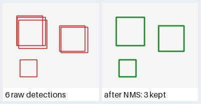
Fig S19 — Six raw detections (left) and the three kept after NMS (right) (real output of the program above)
Good to know
- IoU (intersection over union) = overlap area / combined area. 1 = identical, 0 = no overlap. Two boxes shifted by half their width have IoU 0.33, not 0.5.
- Our NMS kept boxes [0, 3, 5], exactly like
torchvision.ops.nms. - The NMS threshold is a trade-off: too low removes real objects standing close together (a crowd); too high leaves duplicates.
28 Measuring Detectors: Precision-Recall and mAP
Picture: Marking a treasure hunt: a find counts only if it is close enough to a real treasure (IoU ≥ 0.5), and finding the same treasure twice counts as a mistake.
Step-by-step AP@0.5 for 8 detections and 5 true objects (run for real)
# Detection metric: precision-recall and average precision (AP@0.5) for one class, step by step
import numpy as np
gt = {"img1": [[10, 10, 50, 50], [60, 60, 100, 100]], "img2": [[20, 20, 70, 70]], "img3": [[5, 5, 40, 40], [50, 10, 90, 45]]}
dets = [("img1", 0.96, [12, 12, 50, 52]), ("img1", 0.90, [62, 58, 101, 99]), ("img2", 0.85, [22, 18, 72, 70]),
("img3", 0.80, [6, 6, 41, 38]), ("img1", 0.70, [12, 10, 48, 50]), ("img3", 0.55, [100, 100, 140, 140]),
("img2", 0.40, [60, 60, 90, 90]), ("img3", 0.30, [52, 12, 88, 46])]
def iou(a, b):
ix = max(0, min(a[2], b[2]) - max(a[0], b[0])); iy = max(0, min(a[3], b[3]) - max(a[1], b[1])); inter = ix * iy
return inter / ((a[2] - a[0]) * (a[3] - a[1]) + (b[2] - b[0]) * (b[3] - b[1]) - inter)
used = {k: [False] * len(v) for k, v in gt.items()}; n_gt = sum(len(v) for v in gt.values())
tp = fp = 0; P, R = [], []
for img, s, box in sorted(dets, key=lambda d: -d[1]):
ious = [iou(box, g) for g in gt[img]]; j = int(np.argmax(ious))
if ious[j] >= 0.5 and not used[img][j]: used[img][j] = True; tp += 1; kind = "TP"
else: fp += 1; kind = "FP (duplicate)" if ious[j] >= 0.5 else "FP"
P.append(tp / (tp + fp)); R.append(tp / n_gt)
print(f"score {s:.2f} {img}: best IoU {ious[j]:.2f} -> {kind:15} precision {P[-1]:.2f} recall {R[-1]:.2f}")
ap = 0; prev_r = 0
for k in range(len(P)):
ap += (R[k] - prev_r) * max(P[k:]); prev_r = R[k]
print(f"AP@0.5 = {ap:.3f} (area under the precision-recall curve, using the 'max precision to the right' rule)")
# ----- Output (real run) -----
# score 0.96 img1: best IoU 0.86 -> TP precision 1.00 recall 0.20
# score 0.90 img1: best IoU 0.86 -> TP precision 1.00 recall 0.40
# score 0.85 img2: best IoU 0.89 -> TP precision 1.00 recall 0.60
# score 0.80 img3: best IoU 0.87 -> TP precision 1.00 recall 0.80
# score 0.70 img1: best IoU 0.90 -> FP (duplicate) precision 0.80 recall 0.80
# score 0.55 img3: best IoU 0.00 -> FP precision 0.67 recall 0.80
# score 0.40 img2: best IoU 0.03 -> FP precision 0.57 recall 0.80
# score 0.30 img3: best IoU 0.83 -> TP precision 0.62 recall 1.00
# AP@0.5 = 0.925 (area under the precision-recall curve, using the 'max precision to the right' rule)Good to know
- Detections are sorted by score; each is TP or FP; precision and recall are updated after each one. AP is the area under that precision-recall curve.
- The second box on the same object (score 0.70) was a duplicate = false positive, even with IoU 0.90.
- mAP = mean of AP over all classes. 'mAP50' uses IoU 0.5; COCO's 'mAP50-95' averages IoU thresholds 0.50 to 0.95, which rewards tight boxes.
29 Using a Real Detector (YOLO)
Picture: Hiring an expert spotter who already knows 80 everyday objects (people, cars, dogs, cups ...) and can learn your own objects from a few hundred labelled photos.
Inference, training and export with the Ultralytics package (template, not run)
# Object detection with a YOLO model (Ultralytics package; downloads weights: not run here)
# pip install ultralytics
from ultralytics import YOLO
model = YOLO("yolo11n.pt") # small pretrained COCO detector (model names change: check the docs)
results = model("street.jpg", conf=0.25, iou=0.5) # conf = score threshold, iou = NMS threshold
for r in results:
for box in r.boxes:
print(model.names[int(box.cls)], float(box.conf), box.xyxy.tolist())
# Train on your own data (YOLO txt labels + data.yaml):
model.train(data="data.yaml", epochs=50, imgsz=640)
metrics = model.val() # mAP50, mAP50-95
model.export(format="onnx") # for deployment| Step | Tip |
|---|---|
| Collect images | real conditions: lighting, angles, backgrounds where it will be used |
| Label boxes | consistent rules (whole object? partly hidden?); tools like CVAT or Label Studio |
| Train | start from pre-trained weights; watch validation mAP |
| Evaluate | per-class AP, look at false positives and misses per image |
| Deploy | export (ONNX / TensorRT / mobile), measure speed on the real device |
Good to know
- Not run here (downloads weights). Check the licence of the detector package and weights before commercial use.
30 Segmentation: Semantic, Instance and Panoptic (k-means Example)
Picture: Colouring a colouring-book page: semantic segmentation colours all sheep the same; instance segmentation gives each sheep its own colour; panoptic does both for everything, including grass and sky.
Colour clustering with k-means, scored with IoU and Dice (run for real)
# Colour segmentation with k-means, scored against a reference mask with IoU and Dice
import cv2, numpy as np
from sklearn.datasets import load_sample_image
from sklearn.cluster import KMeans
from cvshared import montage
rgb = load_sample_image("flower.jpg")
small = cv2.resize(rgb, (320, 214))
lab = cv2.cvtColor(small, cv2.COLOR_RGB2LAB).reshape(-1, 3).astype(float)
for k in [2, 3, 4, 6]:
km = KMeans(k, n_init=4, random_state=0).fit(lab)
print(f"k={k}: cluster sizes {np.bincount(km.labels_).tolist()}")
km = KMeans(4, n_init=4, random_state=0).fit(lab)
seg = km.cluster_centers_[km.labels_].reshape(small.shape).astype(np.uint8)
seg_rgb = cv2.cvtColor(seg, cv2.COLOR_LAB2RGB)
hsv = cv2.cvtColor(small, cv2.COLOR_RGB2HSV)
ref = (cv2.inRange(hsv, (0, 80, 60), (8, 255, 255)) | cv2.inRange(hsv, (170, 80, 60), (179, 255, 255))) > 0 # 'petals' reference (HSV rule)
best = max(range(4), key=lambda c: ((km.labels_.reshape(ref.shape) == c) & ref).sum())
pred = km.labels_.reshape(ref.shape) == best
iou = (pred & ref).sum() / (pred | ref).sum(); dice = 2 * (pred & ref).sum() / (pred.sum() + ref.sum())
print(f"cluster {best} vs HSV petal mask: IoU {iou:.2f}, Dice {dice:.2f}")
montage("kmeans.png", [small, seg_rgb, ref, pred], ["original", "k-means k=4", "reference (HSV rule)", f"best cluster (IoU {iou:.2f})"])
# ----- Output (real run) -----
# k=2: cluster sizes [16379, 52101]
# k=3: cluster sizes [25960, 16248, 26272]
# k=4: cluster sizes [5336, 25025, 26739, 11380]
# k=6: cluster sizes [7787, 23561, 12088, 5952, 16159, 2933]
# cluster 0 vs HSV petal mask: IoU 0.36, Dice 0.53
# [saved picture kmeans.png: 1046x208]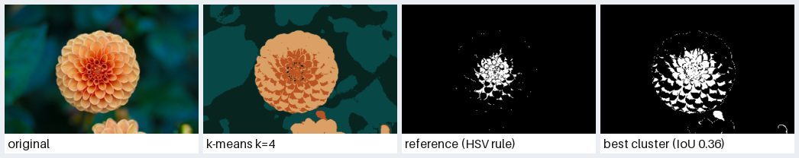
Fig S20 — Flower photo, k-means colours, reference petal mask, best-matching cluster (real output of the program above)
| Type | Output | Example models |
|---|---|---|
| Semantic | a class for every pixel | FCN, U-Net, DeepLab |
| Instance | a mask per object | Mask R-CNN |
| Panoptic | both | Panoptic FPN, Mask2Former-style |
| Promptable | a mask for the point/box you give | Segment Anything family |
Good to know
- Honest result: the best k-means cluster matched the petal reference with IoU 0.36 (Dice 0.53): colour alone cannot separate petals from similar-coloured parts. That gap is why learned segmentation exists.
- Dice = 2·overlap / (size A + size B); IoU = overlap / union. Dice is always ≥ IoU for the same masks.
31 Train a Tiny U-Net for Segmentation
Picture: An artist who first shrinks a picture to understand the big shapes, then enlarges it back while peeking at the original details (skip connections) to colour exactly the right pixels.
A tiny U-Net learns to mark circles in noisy images (with square distractors) (run for real)
# Semantic segmentation: a tiny encoder-decoder (U-Net style) learns to mark circles on noisy synthetic images
import numpy as np, torch, torch.nn as nn, time
from cvshared import montage
torch.manual_seed(0); rng = np.random.default_rng(0)
def sample(n, size=48):
X, Y = np.zeros((n, 1, size, size), np.float32), np.zeros((n, 1, size, size), np.float32)
yy, xx = np.mgrid[:size, :size]
for i in range(n):
for _ in range(rng.integers(1, 4)):
cy, cx, r = rng.integers(8, size - 8, 2).tolist() + [int(rng.integers(4, 9))]
Y[i, 0][(yy - cy) ** 2 + (xx - cx) ** 2 <= r * r] = 1
sq = rng.integers(4, size - 12, 2); X[i, 0, sq[0]:sq[0] + 8, sq[1]:sq[1] + 8] = 0.8 # distractor squares
X[i, 0] += Y[i, 0] * 0.8 + rng.normal(0, 0.25, (size, size))
return torch.tensor(X), torch.tensor(Y)
class TinyUNet(nn.Module):
def __init__(self):
super().__init__()
self.e1 = nn.Sequential(nn.Conv2d(1, 16, 3, padding=1), nn.ReLU()); self.e2 = nn.Sequential(nn.MaxPool2d(2), nn.Conv2d(16, 32, 3, padding=1), nn.ReLU())
self.up = nn.ConvTranspose2d(32, 16, 2, stride=2); self.d = nn.Sequential(nn.Conv2d(32, 16, 3, padding=1), nn.ReLU(), nn.Conv2d(16, 1, 1))
def forward(self, x):
a = self.e1(x); b = self.e2(a); return self.d(torch.cat([self.up(b), a], 1)) # skip connection
Xtr, Ytr = sample(400); Xte, Yte = sample(50)
m = TinyUNet(); opt = torch.optim.Adam(m.parameters(), 3e-3); t = time.perf_counter()
for e in range(25):
perm = torch.randperm(400)
for i in range(0, 400, 32):
b = perm[i:i + 32]; opt.zero_grad(); nn.functional.binary_cross_entropy_with_logits(m(Xtr[b]), Ytr[b]).backward(); opt.step()
with torch.no_grad(): P = (torch.sigmoid(m(Xte)) > 0.5).float()
inter = (P * Yte).sum(); dice = (2 * inter / (P.sum() + Yte.sum())).item(); iou = (inter / ((P + Yte) > 0).sum()).item()
thr = ((Xte > 0.5).float()); dice_thr = (2 * (thr * Yte).sum() / (thr.sum() + Yte.sum())).item()
print(f"tiny U-Net: Dice {dice:.3f}, IoU {iou:.3f} on 50 test images | plain threshold baseline Dice {dice_thr:.3f}")
print(f"parameters {sum(p.numel() for p in m.parameters())}, training {time.perf_counter() - t:.0f} s on CPU")
montage("unet.png", [Xte[0, 0].numpy(), Yte[0, 0].numpy(), thr[0, 0].numpy(), P[0, 0].numpy()], ["noisy input", "true mask", "threshold >0.5", "tiny U-Net"])
# ----- Output (real run) -----
# tiny U-Net: Dice 0.943, IoU 0.892 on 50 test images | plain threshold baseline Dice 0.768
# parameters 11505, training 9 s on CPU
# [saved picture unet.png: 710x208]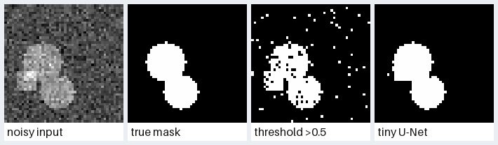
Fig S21 — Noisy input, true mask, simple threshold, tiny U-Net prediction (real output of the program above)
Good to know
- The tiny U-Net (11,505 weights, about 8 s of CPU training) reached Dice 0.943 on new images; a plain brightness threshold only 0.768, because it also marks the bright squares and the noise.
- The skip connection (
torch.cat([self.up(b), a])) gives the decoder sharp details from the encoder; without it masks come out blurry. - Real U-Nets are used for medical images, satellite maps and inside diffusion image generators.
Part F — Video, 3-D, Generation, OCR and Vision-Language
32 Motion: Optical Flow and Background Subtraction
Picture: Watching two photos taken a moment apart and drawing a tiny arrow on every pixel showing where it moved.
Farneback flow and MOG2 background subtraction on synthetic frames (run for real)
# Motion in video: dense optical flow (Farneback) and background subtraction on synthetic frames
import cv2, numpy as np
from cvshared import montage
rng = np.random.default_rng(0)
bg = cv2.GaussianBlur((rng.random((120, 160)) * 255).astype(np.uint8), (0, 0), 3)
def frame(t):
f = bg.copy(); cv2.rectangle(f, (20 + 4 * t, 40 + 2 * t), (50 + 4 * t, 70 + 2 * t), 255, -1); return f
f0, f1 = frame(5), frame(6)
flow = cv2.calcOpticalFlowFarneback(f0, f1, None, 0.5, 3, 15, 3, 5, 1.2, 0)
box = flow[50:70, 45:65]
print(f"average motion inside the moving square: dx={box[..., 0].mean():.2f} px, dy={box[..., 1].mean():.2f} px (true: dx=4, dy=2)")
print(f"average motion in the still background : {np.abs(flow[:30, 100:]).mean():.3f} px")
sub = cv2.createBackgroundSubtractorMOG2(history=20, varThreshold=25, detectShadows=False)
for t in range(15): mask = sub.apply(frame(t))
n = cv2.connectedComponentsWithStats((mask > 0).astype(np.uint8))[0] - 1
print(f"background subtraction after 15 frames: {np.count_nonzero(mask)} moving pixels in {n} blob(s)")
mag = np.hypot(flow[..., 0], flow[..., 1])
montage("flow.png", [f0, f1, mag, mask], ["frame t", "frame t+1", "flow magnitude", "moving pixels"])
# ----- Output (real run) -----
# average motion inside the moving square: dx=1.78 px, dy=1.05 px (true: dx=4, dy=2)
# average motion in the still background : 0.001 px
# background subtraction after 15 frames: 340 moving pixels in 1 blob(s)
# [saved picture flow.png: 934x208]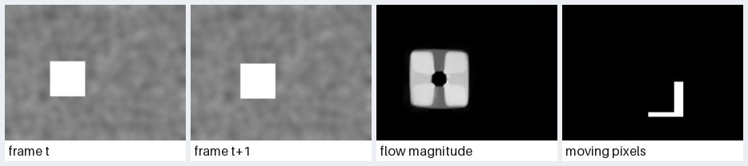
Fig S22 — Two frames, flow magnitude (bright = moving), and the moving pixels found by background subtraction (real output of the program above)
Good to know
- Honest result: inside the moving square the measured motion was about (1.8, 1.0) px instead of the true (4, 2). The square is one flat colour, so its middle has no texture to follow (the aperture problem); motion is visible mainly at its edges.
- The still background showed almost zero flow (0.001 px), and background subtraction found exactly one moving blob.
- Learned flow networks (RAFT-style) handle such cases much better; classic flow is still used for speed.
33 Multi-Object Tracking
Picture: A sports commentator who must keep calling each player by the same name for the whole match, even when they cross paths or hide behind someone for a moment.
Hungarian matching of detections to tracks over 10 frames, with a 2-frame occlusion (run for real)
# Multi-object tracking: give each detection an ID over time (Hungarian matching on distance, like SORT without Kalman)
import numpy as np
from scipy.optimize import linear_sum_assignment
rng = np.random.default_rng(2)
true = {"A": np.array([10.0, 10.0]), "B": np.array([80.0, 20.0]), "C": np.array([40.0, 90.0])}
vel = {"A": np.array([3.0, 1.0]), "B": np.array([-2.0, 2.0]), "C": np.array([1.0, -3.0])}
tracks, next_id, history = {}, 1, []
for t in range(10):
dets = []
for k in true:
true[k] = true[k] + vel[k]
if not (k == "B" and t in (4, 5)): # object B is hidden for two frames (occlusion)
dets.append(true[k] + rng.normal(0, 0.8, 2))
rng.shuffle(dets)
ids = list(tracks)
if ids and dets:
cost = np.array([[np.linalg.norm(tracks[i] - d) for d in dets] for i in ids])
r, c = linear_sum_assignment(cost); matched = set()
for i, j in zip(r, c):
if cost[i, j] < 15: tracks[ids[i]] = dets[j]; matched.add(j)
new = [d for j, d in enumerate(dets) if j not in matched]
else:
new = dets
for d in new: tracks[next_id] = d; next_id += 1
history.append({i: tuple(np.round(p).astype(int)) for i, p in tracks.items()})
print(f"frame {t}: {len(dets)} detections -> tracks " + ", ".join(f"#{i}@{tuple(np.round(p).astype(int).tolist())}" for i, p in tracks.items()))
print("IDs created:", next_id - 1, "(3 objects; B kept its ID through the 2-frame occlusion because the track was not deleted)")
# ----- Output (real run) -----
# frame 0: 3 detections -> tracks #1@(42, 88), #2@(13, 11), #3@(78, 20)
# frame 1: 3 detections -> tracks #1@(42, 84), #2@(17, 12), #3@(76, 25)
# frame 2: 3 detections -> tracks #1@(43, 80), #2@(19, 13), #3@(74, 26)
# frame 3: 3 detections -> tracks #1@(45, 80), #2@(22, 14), #3@(72, 27)
# frame 4: 2 detections -> tracks #1@(46, 75), #2@(24, 14), #3@(72, 27)
# frame 5: 2 detections -> tracks #1@(46, 72), #2@(29, 16), #3@(72, 27)
# frame 6: 3 detections -> tracks #1@(48, 68), #2@(32, 16), #3@(66, 34)
# frame 7: 3 detections -> tracks #1@(47, 67), #2@(34, 19), #3@(64, 37)
# frame 8: 3 detections -> tracks #1@(50, 65), #2@(36, 19), #3@(63, 38)
# frame 9: 3 detections -> tracks #1@(50, 60), #2@(40, 19), #3@(61, 40)
# IDs created: 3 (3 objects; B kept its ID through the 2-frame occlusion because the track was not deleted)Good to know
- Each frame: compute the distance between every existing track and every new detection, solve the best one-to-one assignment (Hungarian algorithm), start new tracks for unmatched detections.
- Object B disappeared for 2 frames and came back with the same ID (#3) because its track was kept. Real trackers (SORT, DeepSORT, ByteTrack) add a Kalman filter to predict motion and appearance features to re-identify objects.
- Metrics: MOTA, IDF1, HOTA (how often IDs switch is as important as finding objects).
34 Cameras, 3-D and Depth
Picture: Closing one eye and then the other: near objects jump a lot, far ones barely move. Two cameras use this jump (disparity) to measure distance, just like our two eyes.
Pinhole projection of a cube, and depth error vs distance for a stereo pair (run for real)
# The pinhole camera: project 3-D points to pixels, and depth from stereo disparity
import numpy as np
fx = fy = 800.0; cx, cy = 320.0, 240.0 # focal length (pixels) and image centre
K = np.array([[fx, 0, cx], [0, fy, cy], [0, 0, 1]])
cube = np.array([[x, y, z] for x in (-0.5, 0.5) for y in (-0.5, 0.5) for z in (4.0, 5.0)]) # metres, in front of the camera
uvw = (K @ cube.T).T; uv = uvw[:, :2] / uvw[:, 2:]
for p, q in zip(cube, uv): print(f"3-D point {p} -> pixel ({q[0]:6.1f}, {q[1]:6.1f})")
print("far corners are closer to the centre: that is perspective")
B = 0.12 # stereo baseline: 12 cm between two cameras
for Z in [1, 2, 5, 10, 20]:
d = fx * B / Z
print(f"object at {Z:2d} m -> disparity {d:6.2f} px; a 1-px error changes the depth estimate by {Z - fx * B / (d + 1):.2f} m")
# ----- Output (real run) -----
# 3-D point [-0.5 -0.5 4. ] -> pixel ( 220.0, 140.0)
# 3-D point [-0.5 -0.5 5. ] -> pixel ( 240.0, 160.0)
# 3-D point [-0.5 0.5 4. ] -> pixel ( 220.0, 340.0)
# 3-D point [-0.5 0.5 5. ] -> pixel ( 240.0, 320.0)
# 3-D point [ 0.5 -0.5 4. ] -> pixel ( 420.0, 140.0)
# 3-D point [ 0.5 -0.5 5. ] -> pixel ( 400.0, 160.0)
# 3-D point [0.5 0.5 4. ] -> pixel ( 420.0, 340.0)
# 3-D point [0.5 0.5 5. ] -> pixel ( 400.0, 320.0)
# far corners are closer to the centre: that is perspective
# object at 1 m -> disparity 96.00 px; a 1-px error changes the depth estimate by 0.01 m
# object at 2 m -> disparity 48.00 px; a 1-px error changes the depth estimate by 0.04 m
# object at 5 m -> disparity 19.20 px; a 1-px error changes the depth estimate by 0.25 m
# object at 10 m -> disparity 9.60 px; a 1-px error changes the depth estimate by 0.94 m
# object at 20 m -> disparity 4.80 px; a 1-px error changes the depth estimate by 3.45 m| Way to get depth | How | Limits |
|---|---|---|
| Stereo cameras | Z = f · B / disparity | accuracy falls quickly with distance |
| Structured light / time-of-flight | project a pattern or time the light | short range, sunlight problems |
| LiDAR | laser pulses | expensive, sparse points |
| Monocular depth networks | one image + a learned model | relative depth; scale must be known |
| Structure from motion / SLAM | track keypoints while moving | needs motion and texture |
Good to know
- The real run shows why stereo struggles far away: a 1-pixel disparity error moves the estimate by 0.01 m at 1 m but by 3.45 m at 20 m (focal length 800 px, baseline 12 cm).
- Camera calibration (OpenCV's chessboard method) finds the focal length, centre and lens distortion before any measuring.
35 Generating Images: GANs and Diffusion
Picture: An artist who starts from TV static and, step by step, removes a little noise while following your description, until a picture appears. That is a diffusion model.
Text-to-image with the diffusers library (template, not run)
# Generating images with a diffusion model (diffusers; large download, GPU recommended: not run here)
import torch
from diffusers import AutoPipelineForText2Image
pipe = AutoPipelineForText2Image.from_pretrained("stabilityai/sdxl-turbo", torch_dtype=torch.float16).to("cuda")
image = pipe("a watercolour painting of a lighthouse at sunrise", num_inference_steps=1, guidance_scale=0.0).images[0]
image.save("lighthouse.png")
# Check the model licence before commercial use; label generated images as AI-generated.| Family | Idea | Notes |
|---|---|---|
| VAE | compress to a code and decode back | blurry alone; used inside latent diffusion |
| GAN (2014) | a generator and a critic play a game | sharp but hard to train; StyleGAN faces |
| Diffusion (2020+) | learn to remove noise step by step | current standard for images and video (as widely reported) |
Good to know
- Responsible use: label generated images, respect licences and people's likeness, and expect misuse (deepfakes); detection and provenance tools (content credentials/watermarks) exist but are imperfect. More in Generative AI.
36 OCR: Reading Text in Images
Picture: A child reading a shop sign: first find where the letters are, then read them, then fix obvious mistakes using known words.
Tesseract and EasyOCR (template, not run)
# OCR: reading text from images (needs the Tesseract program or EasyOCR model downloads: not run here)
import cv2, pytesseract
img = cv2.imread("receipt.jpg")
gray = cv2.cvtColor(img, cv2.COLOR_BGR2GRAY)
gray = cv2.adaptiveThreshold(gray, 255, cv2.ADAPTIVE_THRESH_GAUSSIAN_C, cv2.THRESH_BINARY, 31, 10) # clean up first
print(pytesseract.image_to_string(gray, lang="eng"))
# EasyOCR (deep learning, many scripts incl. Hindi):
import easyocr
reader = easyocr.Reader(["en", "hi"])
for box, text, conf in reader.readtext("signboard.jpg"):
print(text, round(conf, 2))Good to know
- Pipeline: detect text regions → recognise characters → post-process (dictionary, regex for dates/amounts).
- Pre-processing from Part B (thresholding, deskewing with a homography, denoising) often matters more than the OCR engine.
- For documents with layout (invoices, forms), document-AI and vision-language models read fields directly; validate amounts and dates with rules.
37 Vision-Language Models: Asking Questions About Images
Picture: Showing a photo to a well-read friend and asking 'which shelves are empty?' in plain words.
Image + question with the Anthropic SDK (claude-opus-5-5) (template, not run)
# Asking a vision-capable LLM about an image with the Anthropic SDK (needs an API key: not run here)
import base64, anthropic
client = anthropic.Anthropic()
with open("shelf.jpg", "rb") as f:
data = base64.standard_b64encode(f.read()).decode("utf-8")
resp = client.messages.create(
model="claude-opus-5-5",
max_tokens=1024,
messages=[{"role": "user", "content": [
{"type": "image", "source": {"type": "base64", "media_type": "image/jpeg", "data": data}},
{"type": "text", "text": "List the products visible on this shelf and say which shelf rows look empty."},
]}],
)
print("".join(b.text for b in resp.content if b.type == "text"))
# Good for flexible questions about images; for counting/measuring at scale, a trained detector is cheaper and more exact.Good to know
- Great for flexible questions, captions, reading charts and screenshots, and checking documents.
- For high-volume, exact tasks (counting parts on a production line), a trained detector is cheaper, faster and more predictable.
- Images can contain hidden instructions (prompt injection in pictures): treat model output as untrusted (AI Security).
Part G — Robustness, Deployment and Responsibility
38 Robustness: Adversarial Examples (Defence Lesson)
Picture: Optical illusions for computers: changing pixels so slightly that a person sees no difference, yet the model's answer flips.
FGSM attack strength vs accuracy, with and without adversarial training (simulation for defence) (run for real)
# Robustness (defence lesson): tiny pixel changes chosen by the gradient (FGSM) fool a digits CNN; adversarial training helps
import torch, torch.nn as nn
from sklearn.datasets import load_digits
from sklearn.model_selection import train_test_split
X, y = load_digits(return_X_y=True); X = torch.tensor(X / 16.0, dtype=torch.float32).view(-1, 1, 8, 8); y = torch.tensor(y)
Xtr, Xte, ytr, yte = train_test_split(X, y, test_size=0.3, random_state=0, stratify=y)
def make():
torch.manual_seed(0)
return nn.Sequential(nn.Conv2d(1, 16, 3, padding=1), nn.ReLU(), nn.MaxPool2d(2), nn.Flatten(), nn.Linear(256, 10))
def fgsm(m, x, t, eps):
x = x.clone().requires_grad_(True); nn.functional.cross_entropy(m(x), t).backward()
return (x + eps * x.grad.sign()).clamp(0, 1).detach()
def train(adv):
m = make(); opt = torch.optim.Adam(m.parameters(), 3e-3)
for e in range(60):
xb = Xtr
if adv and e >= 10: xb = torch.cat([Xtr, fgsm(m, Xtr, ytr, 0.1)]); yb = torch.cat([ytr, ytr])
else: yb = ytr
opt.zero_grad(); nn.functional.cross_entropy(m(xb), yb).backward(); opt.step()
return m
for name, adv in [("normal training ", False), ("adversarial training", True)]:
m = train(adv); accs = []
for eps in [0.0, 0.05, 0.1, 0.2]:
xa = Xte if eps == 0 else fgsm(m, Xte, yte, eps)
with torch.no_grad(): accs.append((m(xa).argmax(1) == yte).float().mean().item())
print(name + ": accuracy at eps 0 / 0.05 / 0.1 / 0.2 = " + " / ".join(f"{a:.2f}" for a in accs))
# ----- Output (real run) -----
# normal training : accuracy at eps 0 / 0.05 / 0.1 / 0.2 = 0.94 / 0.81 / 0.58 / 0.10
# adversarial training: accuracy at eps 0 / 0.05 / 0.1 / 0.2 = 0.95 / 0.84 / 0.69 / 0.18Good to know
- Normal model: 0.94 accuracy on clean digits, 0.58 at ε = 0.1 and 0.10 at ε = 0.2. Adversarial training improved robustness a little (0.69 at ε = 0.1) without hurting clean accuracy, but did not fix the problem at ε = 0.2.
- This is shown so you can test and defend models: robustness tests, input checks, ensembles, and not relying on one model for safety-critical decisions. See AI Security.
- Real-world robustness is also about blur, rain, night, new camera models and new backgrounds: test on those.
39 Deployment: Smaller and Faster Models
Picture: Packing for a trip: the same clothes rolled tightly take a quarter of the suitcase. Quantization stores weights with 8 bits instead of 32.
Dynamic int8 quantization of a small network: size, accuracy, speed (run for real)
# Making a model smaller for deployment: dynamic int8 quantization of the Linear layers (size, speed, accuracy)
import io, time, torch, torch.nn as nn
from sklearn.datasets import load_digits
from sklearn.model_selection import train_test_split
torch.manual_seed(0)
X, y = load_digits(return_X_y=True); X = torch.tensor(X / 16.0, dtype=torch.float32); y = torch.tensor(y)
Xtr, Xte, ytr, yte = train_test_split(X, y, test_size=0.3, random_state=0, stratify=y)
m = nn.Sequential(nn.Linear(64, 512), nn.ReLU(), nn.Linear(512, 512), nn.ReLU(), nn.Linear(512, 10))
opt = torch.optim.Adam(m.parameters(), 1e-3)
for e in range(30):
opt.zero_grad(); nn.functional.cross_entropy(m(Xtr), ytr).backward(); opt.step()
m.eval()
q = torch.ao.quantization.quantize_dynamic(m, {nn.Linear}, dtype=torch.qint8)
def size(model): b = io.BytesIO(); torch.save(model.state_dict(), b); return len(b.getvalue()) / 1024
def speed(model, reps=300):
with torch.no_grad():
t = time.perf_counter()
for _ in range(reps): model(Xte)
return (time.perf_counter() - t) / reps * 1000
with torch.no_grad(): a32, a8 = (m(Xte).argmax(1) == yte).float().mean().item(), (q(Xte).argmax(1) == yte).float().mean().item()
print(f"float32: {size(m):7.1f} KB, accuracy {a32:.3f}, {speed(m):.3f} ms per batch of {len(Xte)}")
print(f"int8 : {size(q):7.1f} KB, accuracy {a8:.3f}, {speed(q):.3f} ms per batch of {len(Xte)}")
# ----- Output (real run) -----
# float32: 1178.6 KB, accuracy 0.950, 1.091 ms per batch of 540
# int8 : 301.6 KB, accuracy 0.950, 0.707 ms per batch of 540ONNX export and onnxruntime inference (template, not run)
# Export a PyTorch vision model to ONNX and serve it with onnxruntime (not run here)
import torch, onnxruntime as ort, numpy as np
model.eval()
dummy = torch.randn(1, 3, 224, 224)
torch.onnx.export(model, dummy, "model.onnx", input_names=["image"], output_names=["logits"],
dynamic_axes={"image": {0: "batch"}}, opset_version=18)
sess = ort.InferenceSession("model.onnx", providers=["CPUExecutionProvider"])
logits = sess.run(None, {"image": dummy.numpy()})[0]
print(np.argmax(logits, 1))
# Edge devices: TensorRT (NVIDIA), OpenVINO (Intel), Core ML (Apple), LiteRT/TFLite (Android) - see TensorFlow & PyTorch guide.Good to know
- The model shrank from about 1,179 KB to 302 KB, kept the same accuracy (0.950) and ran about 1.5× faster on this CPU (single measurement, not a benchmark).
- Other tricks: pruning, distillation into a smaller student, lower input resolution, batching, and hardware-specific runtimes (TensorRT, OpenVINO, Core ML, LiteRT).
- Always re-measure accuracy after compression; some models lose more than this one.
40 Near-Duplicate Images: Perceptual Hashing
Picture: Recognising a song from its rhythm even if it is played louder or on a different radio: a perceptual hash is a 64-bit summary of how a picture looks.
aHash and dHash distances for edited copies and different photos (run for real)
# Near-duplicate image search with perceptual hashes (aHash, dHash): robust to resizing and mild edits
import cv2, numpy as np
from skimage import data
def ahash(img, n=8): s = cv2.resize(img, (n, n), interpolation=cv2.INTER_AREA); return (s > s.mean()).ravel()
def dhash(img, n=8): s = cv2.resize(img, (n + 1, n), interpolation=cv2.INTER_AREA); return (s[:, 1:] > s[:, :-1]).ravel()
base = cv2.cvtColor(data.chelsea(), cv2.COLOR_RGB2GRAY)
variants = {"resized 50%": cv2.resize(base, None, fx=0.5, fy=0.5), "blurred": cv2.GaussianBlur(base, (7, 7), 0),
"brighter": cv2.convertScaleAbs(base, alpha=1.0, beta=40), "jpeg q=20": cv2.imdecode(cv2.imencode(".jpg", base, [cv2.IMWRITE_JPEG_QUALITY, 20])[1], 0),
"cropped 10%": base[30:-30, 45:-45], "mirrored": cv2.flip(base, 1),
"different photo": cv2.cvtColor(data.coffee(), cv2.COLOR_RGB2GRAY), "another photo": data.camera()}
hb_a, hb_d = ahash(base), dhash(base)
print(f"{'variant':16} {'aHash dist':>10} {'dHash dist':>10} (out of 64 bits; small = same picture)")
for name, v in variants.items():
print(f"{name:16} {int((ahash(v) != hb_a).sum()):10d} {int((dhash(v) != hb_d).sum()):10d}")
# ----- Output (real run) -----
# variant aHash dist dHash dist (out of 64 bits; small = same picture)
# resized 50% 0 0
# blurred 0 0
# brighter 0 0
# jpeg q=20 0 0
# cropped 10% 19 22
# mirrored 30 32
# different photo 38 30
# another photo 29 31Good to know
- Resize, blur, brightness change and heavy JPEG compression: distance 0. Cropping 10% (19-22 bits) and mirroring (30-32 bits) look as different as an unrelated photo (29-38 bits): simple hashes are not robust to geometry changes.
- Used for de-duplicating datasets, finding re-uploads, and copyright/abuse matching. For 'similar meaning' search, use CNN or CLIP embeddings instead.
41 Privacy, Fairness and Responsible Vision
Picture: A camera in a shop is like a stranger who remembers every face: useful for safety, scary if misused. Rules and consent decide what is acceptable.
Live webcam processing with OpenCV (face boxes) (template, not run)
# Live video from a webcam with OpenCV: read frames, process, show (needs a camera + a desktop window: not run here)
import cv2
cap = cv2.VideoCapture(0) # 0 = first camera; or a file path / RTSP URL
face = cv2.CascadeClassifier(cv2.data.haarcascades + "haarcascade_frontalface_default.xml")
while True:
ok, frame = cap.read()
if not ok:
break
gray = cv2.cvtColor(frame, cv2.COLOR_BGR2GRAY)
for (x, y, w, h) in face.detectMultiScale(gray, 1.1, 5):
cv2.rectangle(frame, (x, y), (x + w, y + h), (0, 255, 0), 2)
cv2.imshow("camera", frame)
if cv2.waitKey(1) & 0xFF == ord("q"):
break
cap.release(); cv2.destroyAllWindows()
# Note: OpenCV loads images as BGR, not RGB. Face detection on people needs consent and a lawful purpose.| Risk | Example | Practice |
|---|---|---|
| Privacy | faces, number plates, homes in images | blur or avoid personal data, consent, retention limits; laws such as India's DPDP Act 2023 and the EU AI Act (remote biometric identification is heavily restricted there) |
| Bias | a face model works worse on darker skin | measure accuracy per group; diverse data |
| Surveillance creep | a counting camera later used to identify people | purpose limitation, audits |
| Safety-critical errors | a missed pedestrian | redundant sensors, human oversight, testing in hard conditions |
| Synthetic media | deepfakes | labels, provenance, detection tools |
Good to know
- Face detection (is there a face?) and face recognition (whose face?) are different risk levels; recognition of people needs a lawful basis and often explicit consent.
Part H — Projects, Interview Prep and Reference
42 Projects to Build (Beginner to Advanced)
Picture: Learning by making: from a coin counter to a road-scene detector.
| Level | Project | You practise |
|---|---|---|
| Beginner | Coin / pill counter from a phone photo | thresholding, morphology, connected components |
| Beginner | Document scanner (find corners, straighten, clean) | edges, contours, homography, adaptive threshold |
| Intermediate | Plant-leaf disease classifier with transfer learning | datasets, augmentation, fine-tuning, confusion matrix |
| Intermediate | Duplicate-photo finder for a phone gallery | perceptual hashes, embeddings, thresholds |
| Intermediate | Helmet / no-helmet detector on traffic videos | labelling, YOLO-style training, mAP, ethics |
| Advanced | Segmentation of road / crack / tumour images with a U-Net | masks, Dice/IoU, class imbalance |
| Advanced | People counter with tracking for a shop entrance | detection + tracking + privacy design |
| Advanced | Visual search: find products by photo (CLIP-style embeddings + vector index) | embeddings, retrieval metrics, serving |
Good to know
- Write down your evaluation set first, and include hard cases (night, blur, unusual angles).
43 Interview Questions and Answers (Easy → Hard)
Picture: A mock interview, from definitions to design.
Basics
| Question | Short answer |
|---|---|
| What is an image to a computer? | A height × width × channels array of numbers (uint8 0-255 or floats). |
| Why HSV for colour picking? | Hue separates colour from brightness, so thresholds survive some lighting change. |
| Median vs Gaussian blur? | Median removes salt-and-pepper specks and keeps edges; Gaussian is better for fine grain. |
| What does Canny's hysteresis do? | Keeps weak edge pixels only if they connect to strong ones. |
Deep learning
| Question | Short answer |
|---|---|
| Why do CNNs need fewer weights than MLPs on images? | Small kernels shared across all positions (weight sharing) and local connections. |
| Output size of a conv layer? | (in + 2·pad − kernel) / stride + 1. |
| Why ResNet skip connections? | Gradients flow through the shortcut, so very deep nets train. |
| CNN vs ViT on small data? | CNNs usually win (built-in image assumptions); ViTs need more data or pre-training. |
| How to fight overfitting with few images? | Pre-trained backbone, augmentation, regularisation, early stopping, more labels. |
Detection, segmentation, systems
| Question | Short answer |
|---|---|
| What are IoU and NMS? | Overlap / union of two boxes; removing lower-score boxes that overlap a kept box above a threshold. |
| mAP50 vs mAP50-95? | AP at IoU 0.5 vs averaged over IoU 0.50-0.95 (rewards tight boxes). |
| Dice vs IoU? | Both measure mask overlap; Dice = 2|A∩B| / (|A|+|B|), always ≥ IoU. |
| Design a people counter for a shop. | Detector + tracker + counting line, measured on real footage, run on the edge, no identity storage, privacy notice. |
| Your detector works in the lab but not in the store. Why? | Domain shift: lighting, camera angle, backgrounds, new products; collect and label store images, re-evaluate. |
44 Common Pitfalls and a Checklist
Picture: A pre-flight checklist for vision projects.
| Pitfall | Fix |
|---|---|
| BGR vs RGB mix-up (OpenCV) | convert explicitly; check a known-colour pixel |
| uint8 overflow in arithmetic | convert to float, then clip |
| Wrong box format (xyxy vs xywh, pixels vs 0-1) | one helper for conversions, unit tests |
| Train/test images of the same scene or patient | split by scene/patient/camera, not by image |
| Pre-processing differs between training and serving | one shared pre-processing function |
| Accuracy only, on an easy test set | hard cases, per-class metrics, look at failures |
| Augmentation that changes the label | think: does a flip/rotation keep the meaning? |
| Ignoring speed on the real device | measure on target hardware early |
Before you ship
- Evaluation set with hard and rare cases, split correctly
- Per-class metrics and a gallery of mistakes reviewed
- Latency/memory measured on the target device
- Privacy and consent reviewed
- Monitoring for drift (new cameras, seasons)
45 Mini Glossary
Picture: A pocket dictionary for vision words.
- Pixel
- one tiny square of an image with its colour values
- Channel
- one colour layer (R, G or B), or one feature map in a CNN
- Kernel / filter
- small weight grid slid over an image (convolution)
- Feature map
- the output of one kernel over the whole image
- Stride / padding
- step size of the kernel / border added around the image
- Homography
- 3×3 matrix mapping one plane view to another
- Keypoint / descriptor
- a distinctive point / a short vector describing it
- RANSAC
- robust fitting that ignores outliers by voting
- IoU
- intersection over union of two boxes or masks
- NMS
- non-maximum suppression: removes duplicate boxes
- mAP
- mean average precision over classes (detection metric)
- Dice
- mask overlap score 2|A∩B| / (|A|+|B|)
- Optical flow
- per-pixel motion between frames
- Disparity
- shift of a point between left and right images (gives depth)
- ViT
- Vision Transformer: image patches as tokens
- Quantization
- storing weights with fewer bits (e.g. int8)
46 FAQ
Picture: Questions beginners ask.
| Question | Answer |
|---|---|
| OpenCV or deep learning first? | Both: OpenCV basics (Parts A-C) take days and help forever; then CNNs with PyTorch. |
| Do I need a GPU? | Not to learn: everything here ran on a CPU. Training real detectors/segmenters needs a GPU (cloud is fine). |
| How many images do I need? | With a pre-trained model, often a few hundred labelled images per class to start; more for detection and rare cases. |
| Which detector should I use? | A maintained, well-documented one with a licence that fits your use; compare on your own images. |
| Is classic CV still useful? | Yes: pre-processing, measurement, geometry, fast checks on edge devices, and when data is scarce. |
47 Quick Quiz
Picture: Guess first, then open the answer.
1. What shape does a 640×427 colour photo have in NumPy?
(427, 640, 3): height, width, channels.
2. Which filter removes salt-and-pepper noise best here?
Median (27.8 dB PSNR).
3. How many point pairs does a homography need?
4.
4. Why did template matching fail on the rotated object?
It compares pixels directly; rotation changes them.
5. Output size of a 3×3 conv, stride 2, padding 1 on 224×224?
112×112.
6. Why did the tiny ViT lose to the CNN?
Too little data; CNNs have built-in image assumptions.
7. Is a second box on an already-found object a TP?
No, a false positive (duplicate).
8. What do U-Net skip connections give?
Fine spatial detail to the decoder, so masks are sharp.
9. Why is stereo depth poor far away?
Disparity becomes tiny, so a 1-pixel error is a big depth error.
10. What did int8 quantization do to the small model?
About 4× smaller, same accuracy, somewhat faster on this CPU.
48 Learning Path
Picture: A staircase: one step every week or two.
| Step | Learn | Practise |
|---|---|---|
| 1 | NumPy arrays, images as arrays, colour spaces | load, crop, convert, threshold your own photos |
| 2 | Filters, edges, morphology, histograms | coin counter; document cleaner |
| 3 | Geometry, keypoints, homography, camera model | document scanner; panorama stitcher |
| 4 | CNNs in PyTorch, training loops, augmentation | digit/clothing classifier |
| 5 | Transfer learning, architectures, ViT basics | fine-tune on your own photo classes |
| 6 | Detection and segmentation, metrics | train a small detector; a U-Net on a public dataset |
| 7 | Video, tracking, 3-D, OCR, vision-language | people counter; receipt reader |
| 8 | Deployment, robustness, ethics | ONNX + quantization on a phone or Raspberry Pi |
49 Resources
Picture: Good next steps.
- docs OpenCV (source, samples and links to the docs)
- docs scikit-image documentation
- docs torchvision documentation
- docs Ultralytics YOLO documentation
- article Stanford CS231n notes: CNNs for visual recognition
- paper ResNet (He et al., 2015)
- paper U-Net (Ronneberger et al., 2015)
- paper YOLO (Redmon et al., 2015)
- paper Vision Transformer (Dosovitskiy et al., 2020)
- paper CLIP (Radford et al., 2021)
- paper Segment Anything (Kirillov et al., 2023)
- paper Adversarial examples / FGSM (Goodfellow et al., 2014)
- video YouTube search: computer vision full course
- video YouTube search: CNN explained
Good to know
- Related guides: NLP, Deep Learning, TensorFlow & PyTorch, Generative AI, MLOps & LLMOps, AI Security.